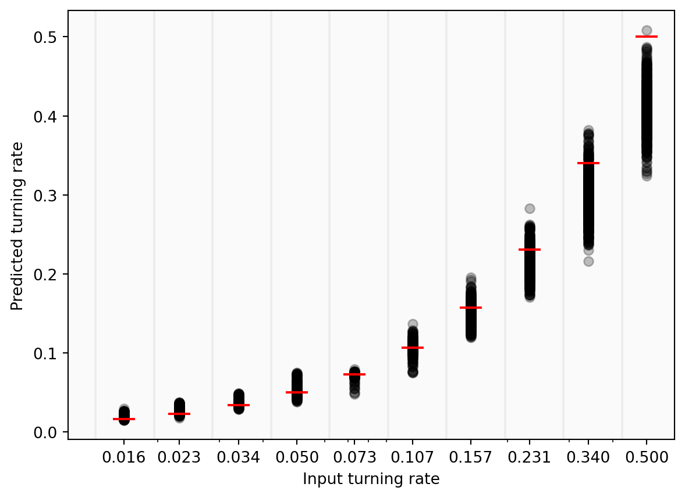
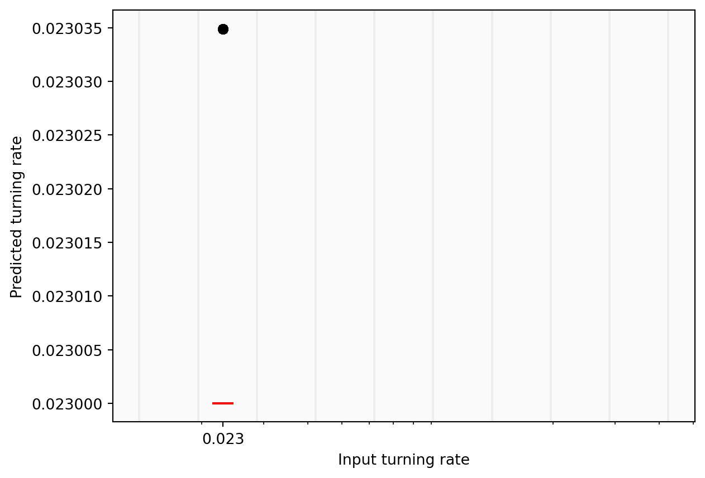
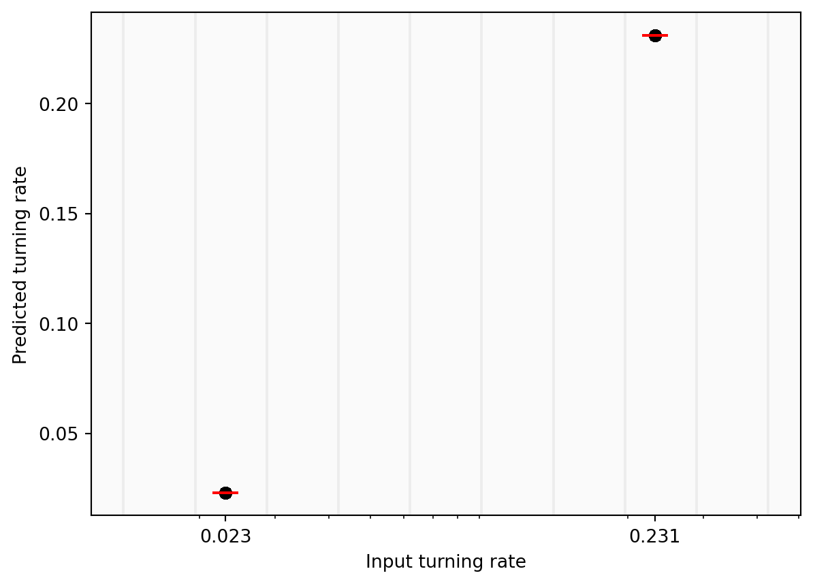
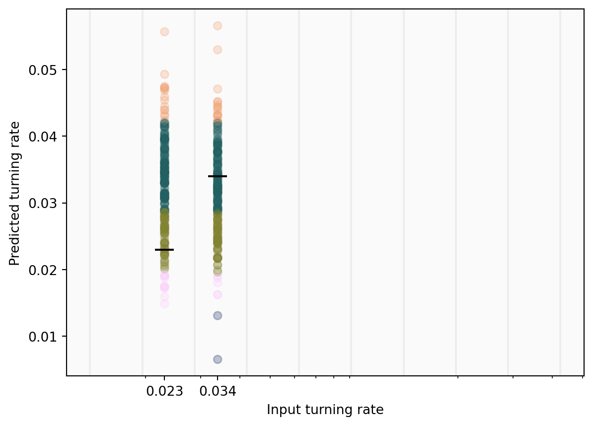
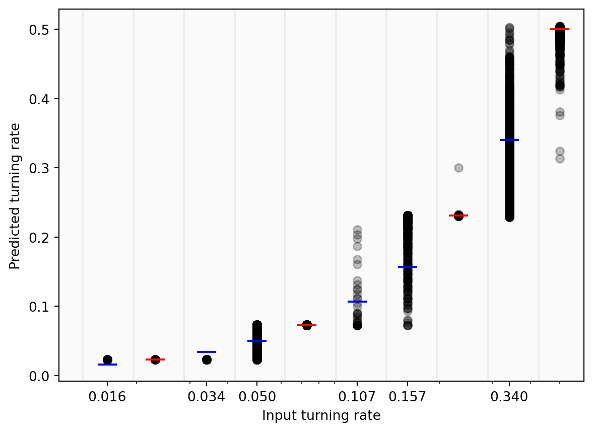

<!DOCTYPE html>
<html xmlns="http://www.w3.org/1999/xhtml" lang="en" xml:lang="en"><head>

<meta charset="utf-8">
<meta name="generator" content="quarto-1.4.550">

<meta name="viewport" content="width=device-width, initial-scale=1.0, user-scalable=yes">

<meta name="author" content="NP">
<meta name="dcterms.date" content="2024-02-21">

<title>Dissipation Learning in Active Matter - Week 16</title>
<style>
code{white-space: pre-wrap;}
span.smallcaps{font-variant: small-caps;}
div.columns{display: flex; gap: min(4vw, 1.5em);}
div.column{flex: auto; overflow-x: auto;}
div.hanging-indent{margin-left: 1.5em; text-indent: -1.5em;}
ul.task-list{list-style: none;}
ul.task-list li input[type="checkbox"] {
  width: 0.8em;
  margin: 0 0.8em 0.2em -1em; /* quarto-specific, see https://github.com/quarto-dev/quarto-cli/issues/4556 */ 
  vertical-align: middle;
}
/* CSS for syntax highlighting */
pre > code.sourceCode { white-space: pre; position: relative; }
pre > code.sourceCode > span { line-height: 1.25; }
pre > code.sourceCode > span:empty { height: 1.2em; }
.sourceCode { overflow: visible; }
code.sourceCode > span { color: inherit; text-decoration: inherit; }
div.sourceCode { margin: 1em 0; }
pre.sourceCode { margin: 0; }
@media screen {
div.sourceCode { overflow: auto; }
}
@media print {
pre > code.sourceCode { white-space: pre-wrap; }
pre > code.sourceCode > span { text-indent: -5em; padding-left: 5em; }
}
pre.numberSource code
  { counter-reset: source-line 0; }
pre.numberSource code > span
  { position: relative; left: -4em; counter-increment: source-line; }
pre.numberSource code > span > a:first-child::before
  { content: counter(source-line);
    position: relative; left: -1em; text-align: right; vertical-align: baseline;
    border: none; display: inline-block;
    -webkit-touch-callout: none; -webkit-user-select: none;
    -khtml-user-select: none; -moz-user-select: none;
    -ms-user-select: none; user-select: none;
    padding: 0 4px; width: 4em;
  }
pre.numberSource { margin-left: 3em;  padding-left: 4px; }
div.sourceCode
  {   }
@media screen {
pre > code.sourceCode > span > a:first-child::before { text-decoration: underline; }
}
</style>


<script src="../site_libs/quarto-nav/quarto-nav.js"></script>
<script src="../site_libs/quarto-nav/headroom.min.js"></script>
<script src="../site_libs/clipboard/clipboard.min.js"></script>
<script src="../site_libs/quarto-search/autocomplete.umd.js"></script>
<script src="../site_libs/quarto-search/fuse.min.js"></script>
<script src="../site_libs/quarto-search/quarto-search.js"></script>
<meta name="quarto:offset" content="../">
<link href="../activity_log/week_17.html" rel="next">
<link href="../activity_log/week_15.html" rel="prev">
<script src="../site_libs/quarto-html/quarto.js"></script>
<script src="../site_libs/quarto-html/popper.min.js"></script>
<script src="../site_libs/quarto-html/tippy.umd.min.js"></script>
<script src="../site_libs/quarto-html/anchor.min.js"></script>
<link href="../site_libs/quarto-html/tippy.css" rel="stylesheet">
<link href="../site_libs/quarto-html/quarto-syntax-highlighting.css" rel="stylesheet" class="quarto-color-scheme" id="quarto-text-highlighting-styles">
<link href="../site_libs/quarto-html/quarto-syntax-highlighting-dark.css" rel="prefetch" class="quarto-color-scheme quarto-color-alternate" id="quarto-text-highlighting-styles">
<script src="../site_libs/bootstrap/bootstrap.min.js"></script>
<link href="../site_libs/bootstrap/bootstrap-icons.css" rel="stylesheet">
<link href="../site_libs/bootstrap/bootstrap.min.css" rel="stylesheet" class="quarto-color-scheme" id="quarto-bootstrap" data-mode="light">
<link href="../site_libs/bootstrap/bootstrap-dark.min.css" rel="prefetch" class="quarto-color-scheme quarto-color-alternate" id="quarto-bootstrap" data-mode="dark">
<script id="quarto-search-options" type="application/json">{
  "location": "sidebar",
  "copy-button": false,
  "collapse-after": 3,
  "panel-placement": "start",
  "type": "textbox",
  "limit": 50,
  "keyboard-shortcut": [
    "f",
    "/",
    "s"
  ],
  "language": {
    "search-no-results-text": "No results",
    "search-matching-documents-text": "matching documents",
    "search-copy-link-title": "Copy link to search",
    "search-hide-matches-text": "Hide additional matches",
    "search-more-match-text": "more match in this document",
    "search-more-matches-text": "more matches in this document",
    "search-clear-button-title": "Clear",
    "search-text-placeholder": "",
    "search-detached-cancel-button-title": "Cancel",
    "search-submit-button-title": "Submit",
    "search-label": "Search"
  }
}</script>
<style>html{ scroll-behavior: smooth; }</style>

  <script src="https://polyfill.io/v3/polyfill.min.js?features=es6"></script>
  <script src="https://cdn.jsdelivr.net/npm/mathjax@3/es5/tex-chtml-full.js" type="text/javascript"></script>

<script type="text/javascript">
const typesetMath = (el) => {
  if (window.MathJax) {
    // MathJax Typeset
    window.MathJax.typeset([el]);
  } else if (window.katex) {
    // KaTeX Render
    var mathElements = el.getElementsByClassName("math");
    var macros = [];
    for (var i = 0; i < mathElements.length; i++) {
      var texText = mathElements[i].firstChild;
      if (mathElements[i].tagName == "SPAN") {
        window.katex.render(texText.data, mathElements[i], {
          displayMode: mathElements[i].classList.contains('display'),
          throwOnError: false,
          macros: macros,
          fleqn: false
        });
      }
    }
  }
}
window.Quarto = {
  typesetMath
};
</script>

</head>

<body class="nav-sidebar docked">

<div id="quarto-search-results"></div>
  <header id="quarto-header" class="headroom fixed-top">
  <nav class="quarto-secondary-nav">
    <div class="container-fluid d-flex">
      <button type="button" class="quarto-btn-toggle btn" data-bs-toggle="collapse" data-bs-target=".quarto-sidebar-collapse-item" aria-controls="quarto-sidebar" aria-expanded="false" aria-label="Toggle sidebar navigation" onclick="if (window.quartoToggleHeadroom) { window.quartoToggleHeadroom(); }">
        <i class="bi bi-layout-text-sidebar-reverse"></i>
      </button>
        <nav class="quarto-page-breadcrumbs" aria-label="breadcrumb"><ol class="breadcrumb"><li class="breadcrumb-item">Main content</li><li class="breadcrumb-item"><a href="../activity_log/week_1.html">Activity Log</a></li><li class="breadcrumb-item"><a href="../activity_log/week_16.html">Week 16</a></li></ol></nav>
        <a class="flex-grow-1" role="button" data-bs-toggle="collapse" data-bs-target=".quarto-sidebar-collapse-item" aria-controls="quarto-sidebar" aria-expanded="false" aria-label="Toggle sidebar navigation" onclick="if (window.quartoToggleHeadroom) { window.quartoToggleHeadroom(); }">      
        </a>
      <button type="button" class="btn quarto-search-button" aria-label="" onclick="window.quartoOpenSearch();">
        <i class="bi bi-search"></i>
      </button>
    </div>
  </nav>
</header>
<!-- content -->
<div id="quarto-content" class="quarto-container page-columns page-rows-contents page-layout-article">
<!-- sidebar -->
  <nav id="quarto-sidebar" class="sidebar collapse collapse-horizontal quarto-sidebar-collapse-item sidebar-navigation docked overflow-auto">
    <div class="pt-lg-2 mt-2 text-center sidebar-header">
    <div class="sidebar-title mb-0 py-0">
      <a href="../">Dissipation Learning in Active Matter</a> 
        <div class="sidebar-tools-main tools-wide">
    <a href="https://github.com/dlactivematter" title="" class="quarto-navigation-tool px-1" aria-label=""><i class="bi bi-git"></i></a>
  <a href="" class="quarto-color-scheme-toggle quarto-navigation-tool  px-1" onclick="window.quartoToggleColorScheme(); return false;" title="Toggle dark mode"><i class="bi"></i></a>
  <a href="" class="quarto-reader-toggle quarto-navigation-tool px-1" onclick="window.quartoToggleReader(); return false;" title="Toggle reader mode">
  <div class="quarto-reader-toggle-btn">
  <i class="bi"></i>
  </div>
</a>
</div>
    </div>
      </div>
        <div class="mt-2 flex-shrink-0 align-items-center">
        <div class="sidebar-search">
        <div id="quarto-search" class="" title="Search"></div>
        </div>
        </div>
    <div class="sidebar-menu-container"> 
    <ul class="list-unstyled mt-1">
        <li class="px-0"><hr class="sidebar-divider hi "></li>
        <li class="sidebar-item sidebar-item-section">
      <div class="sidebar-item-container"> 
            <a class="sidebar-item-text sidebar-link text-start" data-bs-toggle="collapse" data-bs-target="#quarto-sidebar-section-1" aria-expanded="true">
 <span class="menu-text">Main content</span></a>
          <a class="sidebar-item-toggle text-start" data-bs-toggle="collapse" data-bs-target="#quarto-sidebar-section-1" aria-expanded="true" aria-label="Toggle section">
            <i class="bi bi-chevron-right ms-2"></i>
          </a> 
      </div>
      <ul id="quarto-sidebar-section-1" class="collapse list-unstyled sidebar-section depth1 show">  
          <li class="sidebar-item sidebar-item-section">
      <div class="sidebar-item-container"> 
            <a class="sidebar-item-text sidebar-link text-start" data-bs-toggle="collapse" data-bs-target="#quarto-sidebar-section-2" aria-expanded="true">
 <span class="menu-text">Activity Log</span></a>
          <a class="sidebar-item-toggle text-start" data-bs-toggle="collapse" data-bs-target="#quarto-sidebar-section-2" aria-expanded="true" aria-label="Toggle section">
            <i class="bi bi-chevron-right ms-2"></i>
          </a> 
      </div>
      <ul id="quarto-sidebar-section-2" class="collapse list-unstyled sidebar-section depth2 show">  
          <li class="sidebar-item">
  <div class="sidebar-item-container"> 
  <a href="../activity_log/week_1.html" class="sidebar-item-text sidebar-link">
 <span class="menu-text">Week 1</span></a>
  </div>
</li>
          <li class="sidebar-item">
  <div class="sidebar-item-container"> 
  <a href="../activity_log/week_14.html" class="sidebar-item-text sidebar-link">
 <span class="menu-text">Week 14</span></a>
  </div>
</li>
          <li class="sidebar-item">
  <div class="sidebar-item-container"> 
  <a href="../activity_log/week_15.html" class="sidebar-item-text sidebar-link">
 <span class="menu-text">Week 15</span></a>
  </div>
</li>
          <li class="sidebar-item">
  <div class="sidebar-item-container"> 
  <a href="../activity_log/week_16.html" class="sidebar-item-text sidebar-link active">
 <span class="menu-text">Week 16</span></a>
  </div>
</li>
          <li class="sidebar-item">
  <div class="sidebar-item-container"> 
  <a href="../activity_log/week_17.html" class="sidebar-item-text sidebar-link">
 <span class="menu-text">Week 17</span></a>
  </div>
</li>
          <li class="sidebar-item">
  <div class="sidebar-item-container"> 
  <a href="../activity_log/week_2.html" class="sidebar-item-text sidebar-link">
 <span class="menu-text">Week 2</span></a>
  </div>
</li>
          <li class="sidebar-item">
  <div class="sidebar-item-container"> 
  <a href="../activity_log/week_3.html" class="sidebar-item-text sidebar-link">
 <span class="menu-text">Week 3</span></a>
  </div>
</li>
          <li class="sidebar-item">
  <div class="sidebar-item-container"> 
  <a href="../activity_log/week_4.html" class="sidebar-item-text sidebar-link">
 <span class="menu-text">Week 4</span></a>
  </div>
</li>
          <li class="sidebar-item">
  <div class="sidebar-item-container"> 
  <a href="../activity_log/week_5.html" class="sidebar-item-text sidebar-link">
 <span class="menu-text">Week 5</span></a>
  </div>
</li>
          <li class="sidebar-item">
  <div class="sidebar-item-container"> 
  <a href="../activity_log/week_6.html" class="sidebar-item-text sidebar-link">
 <span class="menu-text">Week 6</span></a>
  </div>
</li>
          <li class="sidebar-item">
  <div class="sidebar-item-container"> 
  <a href="../activity_log/week_7.html" class="sidebar-item-text sidebar-link">
 <span class="menu-text">Week 7</span></a>
  </div>
</li>
          <li class="sidebar-item">
  <div class="sidebar-item-container"> 
  <a href="../activity_log/week_8.html" class="sidebar-item-text sidebar-link">
 <span class="menu-text">Week 8-13</span></a>
  </div>
</li>
      </ul>
  </li>
          <li class="sidebar-item sidebar-item-section">
      <div class="sidebar-item-container"> 
            <a class="sidebar-item-text sidebar-link text-start collapsed" data-bs-toggle="collapse" data-bs-target="#quarto-sidebar-section-3" aria-expanded="false">
 <span class="menu-text">Plots</span></a>
          <a class="sidebar-item-toggle text-start collapsed" data-bs-toggle="collapse" data-bs-target="#quarto-sidebar-section-3" aria-expanded="false" aria-label="Toggle section">
            <i class="bi bi-chevron-right ms-2"></i>
          </a> 
      </div>
      <ul id="quarto-sidebar-section-3" class="collapse list-unstyled sidebar-section depth2 ">  
          <li class="sidebar-item">
  <div class="sidebar-item-container"> 
  <a href="../plots/cluster_size_fitting.html" class="sidebar-item-text sidebar-link">
 <span class="menu-text">Fitting cluster distribution</span></a>
  </div>
</li>
          <li class="sidebar-item">
  <div class="sidebar-item-container"> 
  <a href="../plots/csize_grid.html" class="sidebar-item-text sidebar-link">
 <span class="menu-text">Cluster distribution grid</span></a>
  </div>
</li>
          <li class="sidebar-item">
  <div class="sidebar-item-container"> 
  <a href="../plots/evo.html" class="sidebar-item-text sidebar-link">
 <span class="menu-text">Snapshot evolution</span></a>
  </div>
</li>
          <li class="sidebar-item">
  <div class="sidebar-item-container"> 
  <a href="../plots/labelling.html" class="sidebar-item-text sidebar-link">
 <span class="menu-text">Cluster labelling demo</span></a>
  </div>
</li>
          <li class="sidebar-item">
  <div class="sidebar-item-container"> 
  <a href="../plots/number_of_cluster.html" class="sidebar-item-text sidebar-link">
 <span class="menu-text">Number of clusters</span></a>
  </div>
</li>
          <li class="sidebar-item">
  <div class="sidebar-item-container"> 
  <a href="../plots/percolation_ratio_rho.html" class="sidebar-item-text sidebar-link">
 <span class="menu-text">Ratio of biggest cluster over density</span></a>
  </div>
</li>
      </ul>
  </li>
          <li class="sidebar-item sidebar-item-section">
      <div class="sidebar-item-container"> 
            <a class="sidebar-item-text sidebar-link text-start collapsed" data-bs-toggle="collapse" data-bs-target="#quarto-sidebar-section-4" aria-expanded="false">
 <span class="menu-text">Literature Notes</span></a>
          <a class="sidebar-item-toggle text-start collapsed" data-bs-toggle="collapse" data-bs-target="#quarto-sidebar-section-4" aria-expanded="false" aria-label="Toggle section">
            <i class="bi bi-chevron-right ms-2"></i>
          </a> 
      </div>
      <ul id="quarto-sidebar-section-4" class="collapse list-unstyled sidebar-section depth2 ">  
          <li class="sidebar-item">
  <div class="sidebar-item-container"> 
  <a href="../literature_notes/active-brownian-particles.html" class="sidebar-item-text sidebar-link">
 <span class="menu-text">Active Brownian particles: from collective phenomona to fundamental physics</span></a>
  </div>
</li>
          <li class="sidebar-item">
  <div class="sidebar-item-container"> 
  <a href="../literature_notes/motile-active-matter-intro.html" class="sidebar-item-text sidebar-link">
 <span class="menu-text">2020 Motile Active Matter Introduction</span></a>
  </div>
</li>
          <li class="sidebar-item">
  <div class="sidebar-item-container"> 
  <a href="../literature_notes/run-and-tumble.html" class="sidebar-item-text sidebar-link">
 <span class="menu-text">Run-and-tumble dynamics in a crowded environment: PEP for swimmers</span></a>
  </div>
</li>
      </ul>
  </li>
          <li class="sidebar-item sidebar-item-section">
      <div class="sidebar-item-container"> 
            <a class="sidebar-item-text sidebar-link text-start collapsed" data-bs-toggle="collapse" data-bs-target="#quarto-sidebar-section-5" aria-expanded="false">
 <span class="menu-text">Writings</span></a>
          <a class="sidebar-item-toggle text-start collapsed" data-bs-toggle="collapse" data-bs-target="#quarto-sidebar-section-5" aria-expanded="false" aria-label="Toggle section">
            <i class="bi bi-chevron-right ms-2"></i>
          </a> 
      </div>
      <ul id="quarto-sidebar-section-5" class="collapse list-unstyled sidebar-section depth2 ">  
          <li class="sidebar-item">
  <div class="sidebar-item-container"> 
  <a href="../writings/motivation.html" class="sidebar-item-text sidebar-link">
 <span class="menu-text">What is active matter and why do we study it?</span></a>
  </div>
</li>
          <li class="sidebar-item">
  <div class="sidebar-item-container"> 
  <a href="../writings/prepatory_work.html" class="sidebar-item-text sidebar-link">
 <span class="menu-text">Prepratory work, discussion, and plan for the future</span></a>
  </div>
</li>
      </ul>
  </li>
          <li class="sidebar-item sidebar-item-section">
      <div class="sidebar-item-container"> 
            <a class="sidebar-item-text sidebar-link text-start collapsed" data-bs-toggle="collapse" data-bs-target="#quarto-sidebar-section-6" aria-expanded="false">
 <span class="menu-text">FT notes</span></a>
          <a class="sidebar-item-toggle text-start collapsed" data-bs-toggle="collapse" data-bs-target="#quarto-sidebar-section-6" aria-expanded="false" aria-label="Toggle section">
            <i class="bi bi-chevron-right ms-2"></i>
          </a> 
      </div>
      <ul id="quarto-sidebar-section-6" class="collapse list-unstyled sidebar-section depth2 ">  
          <li class="sidebar-item">
  <div class="sidebar-item-container"> 
  <a href="../shared/ftnotes/Colab.html" class="sidebar-item-text sidebar-link">
 <span class="menu-text">Link to colab notebook</span></a>
  </div>
</li>
          <li class="sidebar-item">
  <div class="sidebar-item-container"> 
  <a href="../shared/ftnotes/interim-report-structure.html" class="sidebar-item-text sidebar-link">
 <span class="menu-text">Interim Report Structure</span></a>
  </div>
</li>
          <li class="sidebar-item">
  <div class="sidebar-item-container"> 
  <a href="../shared/ftnotes/label.html" class="sidebar-item-text sidebar-link">
 <span class="menu-text">Minimal cluster analysis</span></a>
  </div>
</li>
      </ul>
  </li>
      </ul>
  </li>
        <li class="px-0"><hr class="sidebar-divider hi "></li>
        <li class="sidebar-item sidebar-item-section">
      <div class="sidebar-item-container"> 
            <a class="sidebar-item-text sidebar-link text-start" data-bs-toggle="collapse" data-bs-target="#quarto-sidebar-section-7" aria-expanded="true">
 <span class="menu-text">Project information</span></a>
          <a class="sidebar-item-toggle text-start" data-bs-toggle="collapse" data-bs-target="#quarto-sidebar-section-7" aria-expanded="true" aria-label="Toggle section">
            <i class="bi bi-chevron-right ms-2"></i>
          </a> 
      </div>
      <ul id="quarto-sidebar-section-7" class="collapse list-unstyled sidebar-section depth1 show">  
          <li class="sidebar-item">
  <div class="sidebar-item-container"> 
  <a href="../shared/deadlines.html" class="sidebar-item-text sidebar-link">
 <span class="menu-text">Deadlines</span></a>
  </div>
</li>
          <li class="sidebar-item">
  <div class="sidebar-item-container"> 
  <a href="../shared/repo.html" class="sidebar-item-text sidebar-link">
 <span class="menu-text">Repository</span></a>
  </div>
</li>
          <li class="sidebar-item">
  <div class="sidebar-item-container"> 
  <a href="../shared/cluster.html" class="sidebar-item-text sidebar-link">
 <span class="menu-text">Cluster</span></a>
  </div>
</li>
      </ul>
  </li>
        <li class="px-0"><hr class="sidebar-divider hi "></li>
        <li class="sidebar-item sidebar-item-section">
      <div class="sidebar-item-container"> 
            <a class="sidebar-item-text sidebar-link text-start" data-bs-toggle="collapse" data-bs-target="#quarto-sidebar-section-8" aria-expanded="true">
 <span class="menu-text">External links</span></a>
          <a class="sidebar-item-toggle text-start" data-bs-toggle="collapse" data-bs-target="#quarto-sidebar-section-8" aria-expanded="true" aria-label="Toggle section">
            <i class="bi bi-chevron-right ms-2"></i>
          </a> 
      </div>
      <ul id="quarto-sidebar-section-8" class="collapse list-unstyled sidebar-section depth1 show">  
          <li class="sidebar-item">
  <div class="sidebar-item-container"> 
  <a href="https://cryptpad.fr/sheet/#/3/sheet/edit/7200dabe21ea346d966571a07eb6f33a/" class="sidebar-item-text sidebar-link"><i class="bi bi-link-45deg" role="img">
</i> 
 <span class="menu-text">Network logbook</span></a>
  </div>
</li>
          <li class="sidebar-item">
  <div class="sidebar-item-container"> 
  <a href="https://www.zotero.org/groups/5210328/dissipation_learning_in_active_matter/library" class="sidebar-item-text sidebar-link"><i class="bi bi-link-45deg" role="img">
</i> 
 <span class="menu-text">Zotero library</span></a>
  </div>
</li>
          <li class="sidebar-item">
  <div class="sidebar-item-container"> 
  <a href="https://github.com/mstcl/msci-wiki" class="sidebar-item-text sidebar-link"><i class="bi bi-link-45deg" role="img">
</i> 
 <span class="menu-text">GitHub mirror</span></a>
  </div>
</li>
          <li class="sidebar-item">
  <div class="sidebar-item-container"> 
  <a href="https://codeberg.org/lckdscl/msci-wiki" class="sidebar-item-text sidebar-link"><i class="bi bi-link-45deg" role="img">
</i> 
 <span class="menu-text">Codeberg mirror</span></a>
  </div>
</li>
      </ul>
  </li>
        <li class="px-0"><hr class="sidebar-divider hi "></li>
        <li class="sidebar-item">
  <div class="sidebar-item-container"> 
  <a href="../sitemap.html" class="sidebar-item-text sidebar-link">
 <span class="menu-text">All pages</span></a>
  </div>
</li>
    </ul>
    </div>
</nav>
<div id="quarto-sidebar-glass" class="quarto-sidebar-collapse-item" data-bs-toggle="collapse" data-bs-target=".quarto-sidebar-collapse-item"></div>
<!-- margin-sidebar -->
    <div id="quarto-margin-sidebar" class="sidebar margin-sidebar">
        <nav id="TOC" role="doc-toc" class="toc-active">
    <h2 id="toc-title">Content</h2>
   
  <ul>
  <li><a href="#tasks" id="toc-tasks" class="nav-link active" data-scroll-target="#tasks">Tasks</a></li>
  <li><a href="#summary" id="toc-summary" class="nav-link" data-scroll-target="#summary">Summary</a>
  <ul class="collapse">
  <li><a href="#tracking-progress-systematically" id="toc-tracking-progress-systematically" class="nav-link" data-scroll-target="#tracking-progress-systematically">Tracking progress systematically</a></li>
  <li><a href="#metrics" id="toc-metrics" class="nav-link" data-scroll-target="#metrics">Metrics</a></li>
  <li><a href="#previous-progress-and-old-strategy" id="toc-previous-progress-and-old-strategy" class="nav-link" data-scroll-target="#previous-progress-and-old-strategy">Previous progress and old strategy</a></li>
  <li><a href="#validating-our-code-and-figuring-out-the-effect-of-learning-rate" id="toc-validating-our-code-and-figuring-out-the-effect-of-learning-rate" class="nav-link" data-scroll-target="#validating-our-code-and-figuring-out-the-effect-of-learning-rate">Validating our code (and figuring out the effect of learning rate)</a></li>
  <li><a href="#filling-in-the-gaps" id="toc-filling-in-the-gaps" class="nav-link" data-scroll-target="#filling-in-the-gaps">Filling in the gaps</a></li>
  </ul></li>
  <li><a href="#reference-materials" id="toc-reference-materials" class="nav-link" data-scroll-target="#reference-materials">Reference materials</a></li>
  </ul>
<div class="toc-actions"><ul><li><a href="https://github.com/mstcl/msci-wiki/edit/np/activity_log/week_16.qmd" class="toc-action"><i class="bi bi-github"></i>Edit this page</a></li><li><a href="https://github.com/mstcl/msci-wiki/issues/new" class="toc-action"><i class="bi empty"></i>Report an issue</a></li><li><a href="https://github.com/mstcl/msci-wiki/blob/np/activity_log/week_16.qmd" class="toc-action"><i class="bi empty"></i>View source</a></li></ul></div></nav>
    </div>
<!-- main -->
<main class="content" id="quarto-document-content">

<header id="title-block-header" class="quarto-title-block default"><nav class="quarto-page-breadcrumbs quarto-title-breadcrumbs d-none d-lg-block" aria-label="breadcrumb"><ol class="breadcrumb"><li class="breadcrumb-item">Main content</li><li class="breadcrumb-item"><a href="../activity_log/week_1.html">Activity Log</a></li><li class="breadcrumb-item"><a href="../activity_log/week_16.html">Week 16</a></li></ol></nav>
<div class="quarto-title">
<div class="quarto-title-block"><div><h1 class="title">Week 16</h1><button type="button" class="btn code-tools-button dropdown-toggle" id="quarto-code-tools-menu" data-bs-toggle="dropdown" aria-expanded="false"><i class="bi"></i></button><ul class="dropdown-menu dropdown-menu-end" aria-labelelledby="quarto-code-tools-menu"><li><a id="quarto-show-all-code" class="dropdown-item" href="javascript:void(0)" role="button">Show All Code</a></li><li><a id="quarto-hide-all-code" class="dropdown-item" href="javascript:void(0)" role="button">Hide All Code</a></li><li><hr class="dropdown-divider"></li><li><a id="quarto-view-source" class="dropdown-item" href="javascript:void(0)" role="button">View Source</a></li></ul></div></div>
</div>


<div class="quarto-title-meta">

    <div>
    <div class="quarto-title-meta-heading">Author</div>
    <div class="quarto-title-meta-contents">
             <p>NP </p>
          </div>
  </div>
    
    <div>
    <div class="quarto-title-meta-heading">Published</div>
    <div class="quarto-title-meta-contents">
      <p class="date">February 21, 2024</p>
    </div>
  </div>
  
    
  </div>
  


</header>


<section id="tasks" class="level2">
<h2 class="anchored" data-anchor-id="tasks">Tasks</h2>
<ul class="task-list">
<li><label><input type="checkbox" checked="">Try and tune/optimize the models we’ve tested</label></li>
<li><label><input type="checkbox" checked="">Come up with a set of metrics to evaluate our experiments</label></li>
</ul>
</section>
<section id="summary" class="level2">
<h2 class="anchored" data-anchor-id="summary">Summary</h2>
<section id="tracking-progress-systematically" class="level3">
<h3 class="anchored" data-anchor-id="tracking-progress-systematically">Tracking progress systematically</h3>
<p>We made a <a href="https://cryptpad.fr/sheet/#/3/sheet/edit/7200dabe21ea346d966571a07eb6f33a/">spreadsheet table</a> to log and track different changes, and start anew, as last week we only designed basic experiments to see what we can potentially do. We also give the model a unique ID (randomly generated), to refer to them easier.</p>
</section>
<section id="metrics" class="level3">
<h3 class="anchored" data-anchor-id="metrics">Metrics</h3>
<p>To evaluate the models, we established some metrics and threshold:</p>
<ul>
<li>Mean absolute error
<ul>
<li><span class="math inline">\(MAE &lt; 0.01\)</span></li>
</ul></li>
<li>Standard deviation (minimum, maxmimum and average of all <span class="math inline">\(\alpha\)</span>’s)
<ul>
<li><span class="math inline">\(\sigma_{max} &lt; 0.02\)</span></li>
<li><span class="math inline">\(\sigma_{mean} &lt; 0.01\)</span></li>
</ul></li>
<li>Overlap ratio within <span class="math inline">\(10^{-3}\)</span> (whether the prediction ranges cover the actual value)
<ul>
<li><span class="math inline">\(O = 1\)</span></li>
</ul></li>
<li>Pearson’s <span class="math inline">\(r\)</span> (this is only affective on a handful of <span class="math inline">\(\alpha\)</span>’s, using it on one or two data points is not very indicative of the model’s performance)
<ul>
<li><span class="math inline">\(r &gt; 0.975\)</span></li>
</ul></li>
</ul>
</section>
<section id="previous-progress-and-old-strategy" class="level3">
<h3 class="anchored" data-anchor-id="previous-progress-and-old-strategy">Previous progress and old strategy</h3>
<p>From last week, model B was okay. It didn’t reduce the spread to the desirable metric after 10 epochs. This prompted us to tweak it slightly. Here were the different attempts:</p>
<ul>
<li>From the previous week, reducing dropout from 0.2 to 0.1.</li>
<li>Instead of training on one <span class="math inline">\(\phi\)</span>, train on similar values to add to it more data (everything else kept the same).
<ul>
<li>Not much improvement. But I only compared between two runs, should do two more pairs and take the average.</li>
</ul></li>
<li>Increasing the number of filters and kernel size in the convolutional layer
<ul>
<li>No improvement, if not slightly worse, slow training times as there are now many more parameters. Still not descending after 10 epochs or so.</li>
</ul></li>
<li>Use LeakyReLU (ReLU but with small gradient when unit is inactive, apparently works well on regression)
<ul>
<li>LeakyReLU seems to be worse. We stick to ReLU for now.</li>
</ul></li>
<li>Apply a separate <code>ReLU()</code> layer after <code>Conv2D()</code> (which now has no activation). Apply <code>MaxPooling2D()</code> in between to reduce parameters.
<ul>
<li>This helps training speed but doesn’t improve nor degrade performance. For simple model we don’t need to use pooling so we can apply it when we declare the <code>Conv2D</code> layer.</li>
</ul></li>
<li>Adding more dense layers with non-linear activation.
<ul>
<li>Significantly more parameters, reduce training speed, no improvement</li>
</ul></li>
</ul>
<div class="sourceCode" id="cb1"><pre class="sourceCode numberSource python number-lines code-with-copy"><code class="sourceCode python"><span id="cb1-1"><a href="#cb1-1"></a><span class="co"># Before</span></span>
<span id="cb1-2"><a href="#cb1-2"></a>model.add(</span>
<span id="cb1-3"><a href="#cb1-3"></a>    Conv2D(</span>
<span id="cb1-4"><a href="#cb1-4"></a>        filters<span class="op">=</span><span class="dv">3</span>,</span>
<span id="cb1-5"><a href="#cb1-5"></a>        kernel_size<span class="op">=</span>(<span class="dv">3</span>, <span class="dv">3</span>),</span>
<span id="cb1-6"><a href="#cb1-6"></a>        padding<span class="op">=</span><span class="st">"same"</span>,</span>
<span id="cb1-7"><a href="#cb1-7"></a>        activation<span class="op">=</span><span class="st">"relu"</span>,</span>
<span id="cb1-8"><a href="#cb1-8"></a>        input_shape<span class="op">=</span>shape,</span>
<span id="cb1-9"><a href="#cb1-9"></a>    )</span>
<span id="cb1-10"><a href="#cb1-10"></a>)</span>
<span id="cb1-11"><a href="#cb1-11"></a>model.add(BatchNormalization())</span>
<span id="cb1-12"><a href="#cb1-12"></a></span>
<span id="cb1-13"><a href="#cb1-13"></a><span class="co"># After</span></span>
<span id="cb1-14"><a href="#cb1-14"></a>model.add(Conv2D(filters<span class="op">=</span><span class="dv">3</span>, kernel_size<span class="op">=</span>(<span class="dv">3</span>, <span class="dv">3</span>), padding<span class="op">=</span><span class="st">"same"</span>, input_shape<span class="op">=</span>shape))</span>
<span id="cb1-15"><a href="#cb1-15"></a>model.add(MaxPooling2D(pool_size<span class="op">=</span>(<span class="dv">2</span>, <span class="dv">2</span>), padding<span class="op">=</span><span class="st">"same"</span>))</span>
<span id="cb1-16"><a href="#cb1-16"></a>model.add(ReLU())</span>
<span id="cb1-17"><a href="#cb1-17"></a>model.add(BatchNormalization())</span></code><button title="Copy to Clipboard" class="code-copy-button"><i class="bi"></i></button></pre></div>
<p>Advising the models from <a href="https://www.kaggle.com/code/guidosalimbeni/regression-with-convolutional-neural-network-keras/notebook">here</a> and (here)[https://github.com/rsyamil/cnn-regression/blob/master/cnn_regression.ipynb]. We revise last weeks’ architecture to give:</p>
<div class="sourceCode" id="cb2"><pre class="sourceCode numberSource python number-lines code-with-copy"><code class="sourceCode python"><span id="cb2-1"><a href="#cb2-1"></a><span class="kw">def</span> make_net(shape):</span>
<span id="cb2-2"><a href="#cb2-2"></a>    model <span class="op">=</span> Sequential()</span>
<span id="cb2-3"><a href="#cb2-3"></a></span>
<span id="cb2-4"><a href="#cb2-4"></a>    model.add(Conv2D(filters<span class="op">=</span><span class="dv">3</span>, kernel_size<span class="op">=</span>(<span class="dv">3</span>, <span class="dv">3</span>), padding<span class="op">=</span><span class="st">"same"</span>, input_shape<span class="op">=</span>shape))</span>
<span id="cb2-5"><a href="#cb2-5"></a>    model.add(MaxPooling2D(pool_size<span class="op">=</span>(<span class="dv">2</span>, <span class="dv">2</span>), padding<span class="op">=</span><span class="st">"same"</span>))</span>
<span id="cb2-6"><a href="#cb2-6"></a>    model.add(ReLU())</span>
<span id="cb2-7"><a href="#cb2-7"></a>    model.add(BatchNormalization())</span>
<span id="cb2-8"><a href="#cb2-8"></a></span>
<span id="cb2-9"><a href="#cb2-9"></a>    model.add(Conv2D(filters<span class="op">=</span><span class="dv">4</span>, kernel_size<span class="op">=</span>(<span class="dv">4</span>, <span class="dv">4</span>), padding<span class="op">=</span><span class="st">"same"</span>))</span>
<span id="cb2-10"><a href="#cb2-10"></a>    model.add(MaxPooling2D(pool_size<span class="op">=</span>(<span class="dv">2</span>, <span class="dv">2</span>), padding<span class="op">=</span><span class="st">"same"</span>))</span>
<span id="cb2-11"><a href="#cb2-11"></a>    model.add(ReLU())</span>
<span id="cb2-12"><a href="#cb2-12"></a>    model.add(BatchNormalization())</span>
<span id="cb2-13"><a href="#cb2-13"></a></span>
<span id="cb2-14"><a href="#cb2-14"></a>    model.add(Conv2D(filters<span class="op">=</span><span class="dv">6</span>, kernel_size<span class="op">=</span>(<span class="dv">5</span>, <span class="dv">5</span>), padding<span class="op">=</span><span class="st">"same"</span>))</span>
<span id="cb2-15"><a href="#cb2-15"></a>    model.add(MaxPooling2D(pool_size<span class="op">=</span>(<span class="dv">2</span>, <span class="dv">2</span>), padding<span class="op">=</span><span class="st">"same"</span>))</span>
<span id="cb2-16"><a href="#cb2-16"></a>    model.add(ReLU())</span>
<span id="cb2-17"><a href="#cb2-17"></a>    model.add(BatchNormalization())</span>
<span id="cb2-18"><a href="#cb2-18"></a></span>
<span id="cb2-19"><a href="#cb2-19"></a>    model.add(GlobalAveragePooling2D())</span>
<span id="cb2-20"><a href="#cb2-20"></a></span>
<span id="cb2-21"><a href="#cb2-21"></a>    <span class="cf">with</span> options({<span class="st">"layout_optimizer"</span>: <span class="va">False</span>}):</span>
<span id="cb2-22"><a href="#cb2-22"></a>        model.add(Dropout(<span class="fl">0.1</span>))</span>
<span id="cb2-23"><a href="#cb2-23"></a></span>
<span id="cb2-24"><a href="#cb2-24"></a>    model.add(Dense(units<span class="op">=</span><span class="dv">128</span>, activation<span class="op">=</span><span class="st">"relu"</span>))</span>
<span id="cb2-25"><a href="#cb2-25"></a></span>
<span id="cb2-26"><a href="#cb2-26"></a>    <span class="cf">with</span> options({<span class="st">"layout_optimizer"</span>: <span class="va">False</span>}):</span>
<span id="cb2-27"><a href="#cb2-27"></a>        model.add(Dropout(<span class="fl">0.1</span>))</span>
<span id="cb2-28"><a href="#cb2-28"></a></span>
<span id="cb2-29"><a href="#cb2-29"></a>    model.add(Dense(units<span class="op">=</span><span class="dv">3</span>, activation<span class="op">=</span><span class="st">"relu"</span>))</span>
<span id="cb2-30"><a href="#cb2-30"></a></span>
<span id="cb2-31"><a href="#cb2-31"></a>    model.add(Flatten())</span>
<span id="cb2-32"><a href="#cb2-32"></a>    model.add(Dense(units<span class="op">=</span><span class="dv">1</span>, activation<span class="op">=</span><span class="st">"linear"</span>))</span>
<span id="cb2-33"><a href="#cb2-33"></a>    <span class="cf">return</span> model</span></code><button title="Copy to Clipboard" class="code-copy-button"><i class="bi"></i></button></pre></div>
<section id="overall-results" class="level4">
<h4 class="anchored" data-anchor-id="overall-results">Overall results</h4>
<p>In general, even with minor tweaks, the performance is just okay, there is a lot of spread. The run below showcases an “average” spread/distribution of the predictions, it was trained on all <span class="math inline">\(\alphas\)</span>’s, using the default Adam optimizer, ran on 10 epochs (but seemed to have constant loss quickly after 3-4 epochs).</p>
<p>Model name is <code>rock8943</code>.</p>
<div id="3d0f2d5e" class="cell" data-execution_count="2">
<details class="code-fold">
<summary>Code</summary>
<div class="sourceCode cell-code" id="cb3"><pre class="sourceCode numberSource python number-lines code-with-copy"><code class="sourceCode python"><span id="cb3-1"><a href="#cb3-1"></a><span class="im">import</span> os</span>
<span id="cb3-2"><a href="#cb3-2"></a>os.chdir(<span class="st">"/hades/projects/persistent-exclusion-process/"</span>)</span>
<span id="cb3-3"><a href="#cb3-3"></a><span class="im">import</span> numpy <span class="im">as</span> np</span>
<span id="cb3-4"><a href="#cb3-4"></a><span class="im">import</span> tensorflow <span class="im">as</span> tf</span>
<span id="cb3-5"><a href="#cb3-5"></a><span class="im">import</span> matplotlib.pyplot <span class="im">as</span> plt</span>
<span id="cb3-6"><a href="#cb3-6"></a><span class="im">import</span> matplotlib.ticker <span class="im">as</span> ticker</span>
<span id="cb3-7"><a href="#cb3-7"></a><span class="im">from</span> src.training_utils <span class="im">import</span> extract_floats, data_load, split_dataset, predict_and_plot</span>
<span id="cb3-8"><a href="#cb3-8"></a></span>
<span id="cb3-9"><a href="#cb3-9"></a>np.set_printoptions(precision<span class="op">=</span><span class="dv">3</span>, suppress<span class="op">=</span><span class="va">True</span>)</span></code><button title="Copy to Clipboard" class="code-copy-button"><i class="bi"></i></button></pre></div>
</details>
</div>
<div id="0ccae612" class="cell" data-execution_count="3">
<details class="code-fold">
<summary>Code</summary>
<div class="sourceCode cell-code" id="cb4"><pre class="sourceCode numberSource python number-lines code-with-copy"><code class="sourceCode python"><span id="cb4-1"><a href="#cb4-1"></a>x,y,shape <span class="op">=</span> data_load(</span>
<span id="cb4-2"><a href="#cb4-2"></a>    alphas<span class="op">=</span>np.logspace(<span class="op">-</span><span class="dv">6</span>, <span class="op">-</span><span class="dv">1</span>, <span class="dv">10</span>, base<span class="op">=</span><span class="dv">2</span>),</span>
<span id="cb4-3"><a href="#cb4-3"></a>    densities<span class="op">=</span>[<span class="fl">0.25</span>],</span>
<span id="cb4-4"><a href="#cb4-4"></a>    orientation<span class="op">=</span><span class="va">False</span>,</span>
<span id="cb4-5"><a href="#cb4-5"></a>)</span>
<span id="cb4-6"><a href="#cb4-6"></a>x_train, y_train, x_val, y_val <span class="op">=</span> split_dataset(x,y,last<span class="op">=</span><span class="bu">int</span>(<span class="bu">len</span>(x)<span class="op">*</span><span class="fl">0.2</span>))</span>
<span id="cb4-7"><a href="#cb4-7"></a></span>
<span id="cb4-8"><a href="#cb4-8"></a>name <span class="op">=</span> <span class="st">"rock8943"</span></span>
<span id="cb4-9"><a href="#cb4-9"></a>model <span class="op">=</span> tf.keras.models.load_model(<span class="ss">f'models/</span><span class="sc">{</span>name<span class="sc">}</span><span class="ss">.keras'</span>)</span>
<span id="cb4-10"><a href="#cb4-10"></a>predict_and_plot(model, x_val, y_val)</span></code><button title="Copy to Clipboard" class="code-copy-button"><i class="bi"></i></button></pre></div>
</details>
<div class="cell-output cell-output-stdout">
<pre><code>Number of unique alpha:  10
Shape of x:  (30000, 128, 128, 1)
Shape of y:  (30000,)
Size of training data:  24000
Size of validation data:  6000
  1/188 [..............................] - ETA: 14s 30/188 [===&gt;..........................] - ETA: 0s  60/188 [========&gt;.....................] - ETA: 0s 89/188 [=============&gt;................] - ETA: 0s119/188 [=================&gt;............] - ETA: 0s149/188 [======================&gt;.......] - ETA: 0s178/188 [===========================&gt;..] - ETA: 0s188/188 [==============================] - 0s 2ms/step
Overlap ratio: 1.0
(Min, Max, Avg) STD: 0.0021450114 0.030011639 0.011386833
Pearson's correlation coeff:  0.9908949291825183
Overlap ratio: 1.0
(Min, Max, Avg) STD: 0.0021450114 0.030011639 0.011386833
Pearson's correlation coeff:  0.9908949291825183</code></pre>
</div>
<div class="cell-output cell-output-display">
<div>
<figure class="figure">
<p></p>
</figure>
</div>
</div>
</div>
</section>
</section>
<section id="validating-our-code-and-figuring-out-the-effect-of-learning-rate" class="level3">
<h3 class="anchored" data-anchor-id="validating-our-code-and-figuring-out-the-effect-of-learning-rate">Validating our code (and figuring out the effect of learning rate)</h3>
<p>As a sanity check, it’s important to make sure our model can learn and overfit a few values at a time. Thus, with the same architecture, we start with one value of <span class="math inline">\(\alpha\)</span>. The models are actually trained on augmented data. To redo the predictions here, we remove the augmentation.</p>
<section id="one-alpha" class="level4">
<h4 class="anchored" data-anchor-id="one-alpha">One <span class="math inline">\(\alpha\)</span></h4>
<p>With the chosen network, try training only on one set of <span class="math inline">\((\alpha, \phi)\)</span> value first. It worked fine with the default Adam parameters, loss stopped improving after roughly 3-4 epochs.</p>
<p>Model name is <code>rattle9304</code>.</p>
<div id="d74f9435" class="cell" data-execution_count="4">
<details class="code-fold">
<summary>Code</summary>
<div class="sourceCode cell-code" id="cb6"><pre class="sourceCode numberSource python number-lines code-with-copy"><code class="sourceCode python"><span id="cb6-1"><a href="#cb6-1"></a>x,y,shape <span class="op">=</span> data_load(</span>
<span id="cb6-2"><a href="#cb6-2"></a>    alphas<span class="op">=</span>[<span class="fl">0.023</span>],</span>
<span id="cb6-3"><a href="#cb6-3"></a>    densities<span class="op">=</span>[<span class="fl">0.2</span>],</span>
<span id="cb6-4"><a href="#cb6-4"></a>    orientation<span class="op">=</span><span class="va">False</span>,</span>
<span id="cb6-5"><a href="#cb6-5"></a>)</span>
<span id="cb6-6"><a href="#cb6-6"></a>x_train, y_train, x_val, y_val <span class="op">=</span> split_dataset(x,y,last<span class="op">=</span><span class="bu">int</span>(<span class="bu">len</span>(x)<span class="op">*</span><span class="fl">0.2</span>))</span>
<span id="cb6-7"><a href="#cb6-7"></a></span>
<span id="cb6-8"><a href="#cb6-8"></a>name <span class="op">=</span> <span class="st">"rattle9304"</span></span>
<span id="cb6-9"><a href="#cb6-9"></a>model <span class="op">=</span> tf.keras.models.load_model(<span class="ss">f'models/</span><span class="sc">{</span>name<span class="sc">}</span><span class="ss">.keras'</span>)</span>
<span id="cb6-10"><a href="#cb6-10"></a>predict_and_plot(model, x_val, y_val)</span></code><button title="Copy to Clipboard" class="code-copy-button"><i class="bi"></i></button></pre></div>
</details>
<div class="cell-output cell-output-stdout">
<pre><code>Number of unique alpha:  1
Shape of x:  (3000, 128, 128, 1)
Shape of y:  (3000,)
Size of training data:  2400
Size of validation data:  600
 1/19 [&gt;.............................] - ETA: 1s19/19 [==============================] - 0s 2ms/step
Overlap ratio: 1.0
(Min, Max, Avg) STD: 1.8626451e-09 1.8626451e-09 1.8626451e-09
Pearson's correlation coeff:  nan
Overlap ratio: 1.0
(Min, Max, Avg) STD: 1.8626451e-09 1.8626451e-09 1.8626451e-09
Pearson's correlation coeff:  nan</code></pre>
</div>
<div class="cell-output cell-output-display">
<div>
<figure class="figure">
<p></p>
</figure>
</div>
</div>
</div>
</section>
<section id="two-alphas" class="level4">
<h4 class="anchored" data-anchor-id="two-alphas">Two <span class="math inline">\(\alpha\)</span>’s</h4>
<p>Also works wonderfully well with default Adam, but now loss stopped improving after roughly 17-18 epochs.</p>
<p>Model name is <code>bake3945</code>.</p>
<div id="39f3efa4" class="cell" data-execution_count="5">
<details class="code-fold">
<summary>Code</summary>
<div class="sourceCode cell-code" id="cb8"><pre class="sourceCode numberSource python number-lines code-with-copy"><code class="sourceCode python"><span id="cb8-1"><a href="#cb8-1"></a>x, y, shape <span class="op">=</span> data_load(</span>
<span id="cb8-2"><a href="#cb8-2"></a>    alphas<span class="op">=</span>[<span class="fl">0.023</span>, <span class="fl">0.231</span>],</span>
<span id="cb8-3"><a href="#cb8-3"></a>    densities<span class="op">=</span>[<span class="fl">0.2</span>],</span>
<span id="cb8-4"><a href="#cb8-4"></a>    orientation<span class="op">=</span><span class="va">False</span>,</span>
<span id="cb8-5"><a href="#cb8-5"></a>)</span>
<span id="cb8-6"><a href="#cb8-6"></a>x_train, y_train, x_val, y_val <span class="op">=</span> split_dataset(x, y, last<span class="op">=</span><span class="bu">int</span>(<span class="bu">len</span>(x) <span class="op">*</span> <span class="fl">0.2</span>))</span>
<span id="cb8-7"><a href="#cb8-7"></a></span>
<span id="cb8-8"><a href="#cb8-8"></a>name <span class="op">=</span> <span class="st">"bake3945"</span></span>
<span id="cb8-9"><a href="#cb8-9"></a>model <span class="op">=</span> tf.keras.models.load_model(<span class="ss">f"models/</span><span class="sc">{</span>name<span class="sc">}</span><span class="ss">.keras"</span>)</span>
<span id="cb8-10"><a href="#cb8-10"></a>predict_and_plot(model, x_val, y_val)</span></code><button title="Copy to Clipboard" class="code-copy-button"><i class="bi"></i></button></pre></div>
</details>
<div class="cell-output cell-output-stdout">
<pre><code>Number of unique alpha:  2
Shape of x:  (6000, 128, 128, 1)
Shape of y:  (6000,)
Size of training data:  4800
Size of validation data:  1200
 1/38 [..............................] - ETA: 2s31/38 [=======================&gt;......] - ETA: 0s38/38 [==============================] - 0s 2ms/step
Overlap ratio: 1.0
(Min, Max, Avg) STD: 1.8626451e-09 6.2178533e-06 3.109858e-06
Pearson's correlation coeff:  0.9999999991070567
Overlap ratio: 1.0
(Min, Max, Avg) STD: 1.8626451e-09 6.2178533e-06 3.109858e-06
Pearson's correlation coeff:  0.9999999991070567</code></pre>
</div>
<div class="cell-output cell-output-display">
<div>
<figure class="figure">
<p></p>
</figure>
</div>
</div>
</div>
</section>
<section id="three-alphas" class="level4">
<h4 class="anchored" data-anchor-id="three-alphas">Three <span class="math inline">\(\alpha\)</span>’s</h4>
<p>Starting out with Adam again, but it was getting stuck with 0.001 learning rate. Reducing to 0.006 made it converge again, after around 10 epochs. Here, we learned that one thing we didn’t try earlier was also decreasing the learning rate.</p>
<p>Model name is <code>fish9182</code>.</p>
<div id="4c21dd5c" class="cell" data-execution_count="6">
<details class="code-fold">
<summary>Code</summary>
<div class="sourceCode cell-code" id="cb10"><pre class="sourceCode numberSource python number-lines code-with-copy"><code class="sourceCode python"><span id="cb10-1"><a href="#cb10-1"></a>x, y, shape <span class="op">=</span> data_load(</span>
<span id="cb10-2"><a href="#cb10-2"></a>    alphas<span class="op">=</span>[<span class="fl">0.023</span>, <span class="fl">0.073</span>, <span class="fl">0.231</span>],</span>
<span id="cb10-3"><a href="#cb10-3"></a>    densities<span class="op">=</span>[<span class="fl">0.2</span>],</span>
<span id="cb10-4"><a href="#cb10-4"></a>    orientation<span class="op">=</span><span class="va">False</span>,</span>
<span id="cb10-5"><a href="#cb10-5"></a>)</span>
<span id="cb10-6"><a href="#cb10-6"></a>x_train, y_train, x_val, y_val <span class="op">=</span> split_dataset(x, y, last<span class="op">=</span><span class="bu">int</span>(<span class="bu">len</span>(x) <span class="op">*</span> <span class="fl">0.2</span>))</span>
<span id="cb10-7"><a href="#cb10-7"></a></span>
<span id="cb10-8"><a href="#cb10-8"></a>name <span class="op">=</span> <span class="st">"fish9182"</span></span>
<span id="cb10-9"><a href="#cb10-9"></a>model <span class="op">=</span> tf.keras.models.load_model(<span class="ss">f"models/</span><span class="sc">{</span>name<span class="sc">}</span><span class="ss">.keras"</span>)</span>
<span id="cb10-10"><a href="#cb10-10"></a>prediction <span class="op">=</span> model.predict(x_val)</span>
<span id="cb10-11"><a href="#cb10-11"></a>predict_and_plot(model, x_val, y_val)</span></code><button title="Copy to Clipboard" class="code-copy-button"><i class="bi"></i></button></pre></div>
</details>
<div class="cell-output cell-output-stdout">
<pre><code>Number of unique alpha:  3
Shape of x:  (9000, 128, 128, 1)
Shape of y:  (9000,)
Size of training data:  7200
Size of validation data:  1800
 1/57 [..............................] - ETA: 4s31/57 [===============&gt;..............] - ETA: 0s57/57 [==============================] - 0s 2ms/step
 1/57 [..............................] - ETA: 0s31/57 [===============&gt;..............] - ETA: 0s57/57 [==============================] - 0s 2ms/step
Overlap ratio: 1.0
(Min, Max, Avg) STD: 1.8626451e-09 6.7605615e-06 2.2566248e-06
Pearson's correlation coeff:  0.9999998800795662
Overlap ratio: 1.0
(Min, Max, Avg) STD: 1.8626451e-09 6.7605615e-06 2.2566248e-06
Pearson's correlation coeff:  0.9999998800795662</code></pre>
</div>
<div class="cell-output cell-output-display">
<div>
<figure class="figure">
<p></p>
</figure>
</div>
</div>
</div>
</section>
</section>
<section id="filling-in-the-gaps" class="level3">
<h3 class="anchored" data-anchor-id="filling-in-the-gaps">Filling in the gaps</h3>
<p>A model trained on 4 <span class="math inline">\(\alpha\)</span>’s with the same architecture as above tries to predict the values in between. Here, the learning rate is 0.0002.</p>
<p>Model name is <code>tart1924</code>.</p>
<div id="9ff96773" class="cell" data-execution_count="7">
<details class="code-fold">
<summary>Code</summary>
<div class="sourceCode cell-code" id="cb12"><pre class="sourceCode numberSource python number-lines code-with-copy"><code class="sourceCode python"><span id="cb12-1"><a href="#cb12-1"></a>x,y,shape <span class="op">=</span> data_load(</span>
<span id="cb12-2"><a href="#cb12-2"></a>    alphas<span class="op">=</span>[<span class="fl">0.023</span>,<span class="fl">0.231</span>,<span class="fl">0.073</span>,<span class="fl">0.500</span>],</span>
<span id="cb12-3"><a href="#cb12-3"></a>    densities<span class="op">=</span>[<span class="fl">0.2</span>],</span>
<span id="cb12-4"><a href="#cb12-4"></a>    orientation<span class="op">=</span><span class="va">False</span></span>
<span id="cb12-5"><a href="#cb12-5"></a>)</span>
<span id="cb12-6"><a href="#cb12-6"></a>x_train, y_train, x_val, y_val <span class="op">=</span> split_dataset(x, y, last<span class="op">=</span><span class="bu">int</span>(<span class="bu">len</span>(x) <span class="op">*</span> <span class="fl">0.2</span>))</span>
<span id="cb12-7"><a href="#cb12-7"></a></span>
<span id="cb12-8"><a href="#cb12-8"></a>x_new,y_new,_ <span class="op">=</span> data_load(</span>
<span id="cb12-9"><a href="#cb12-9"></a>    alphas<span class="op">=</span>[<span class="fl">0.340</span>,<span class="fl">0.107</span>,<span class="fl">0.016</span>,<span class="fl">0.157</span>,<span class="fl">0.034</span>,<span class="fl">0.050</span>],</span>
<span id="cb12-10"><a href="#cb12-10"></a>    densities<span class="op">=</span>[<span class="fl">0.2</span>],</span>
<span id="cb12-11"><a href="#cb12-11"></a>    orientation<span class="op">=</span><span class="va">False</span></span>
<span id="cb12-12"><a href="#cb12-12"></a>)</span>
<span id="cb12-13"><a href="#cb12-13"></a>x_new,y_new <span class="op">=</span> x_new[::<span class="dv">2</span>], y_new[::<span class="dv">2</span>]</span>
<span id="cb12-14"><a href="#cb12-14"></a></span>
<span id="cb12-15"><a href="#cb12-15"></a>name <span class="op">=</span> <span class="st">"tart1924"</span></span>
<span id="cb12-16"><a href="#cb12-16"></a>model <span class="op">=</span> tf.keras.models.load_model(<span class="ss">f"models/</span><span class="sc">{</span>name<span class="sc">}</span><span class="ss">.keras"</span>)</span>
<span id="cb12-17"><a href="#cb12-17"></a>prediction <span class="op">=</span> model.predict(x_val)</span>
<span id="cb12-18"><a href="#cb12-18"></a>prediction_new <span class="op">=</span> model.predict(x_new)</span>
<span id="cb12-19"><a href="#cb12-19"></a></span>
<span id="cb12-20"><a href="#cb12-20"></a>bins <span class="op">=</span> np.logspace(<span class="op">-</span><span class="dv">6</span>,<span class="op">-</span><span class="dv">1</span>,<span class="dv">10</span>, base<span class="op">=</span><span class="dv">2</span>)<span class="op">*</span><span class="fl">0.85</span></span>
<span id="cb12-21"><a href="#cb12-21"></a></span>
<span id="cb12-22"><a href="#cb12-22"></a>v <span class="op">=</span> prediction.T[<span class="dv">0</span>]</span>
<span id="cb12-23"><a href="#cb12-23"></a>v_new <span class="op">=</span> prediction_new.T[<span class="dv">0</span>]</span>
<span id="cb12-24"><a href="#cb12-24"></a></span>
<span id="cb12-25"><a href="#cb12-25"></a>fig, ax <span class="op">=</span> plt.subplots()</span>
<span id="cb12-26"><a href="#cb12-26"></a>ax.scatter(y_val, v, c<span class="op">=</span><span class="st">'k'</span>, alpha<span class="op">=</span><span class="fl">0.25</span>)</span>
<span id="cb12-27"><a href="#cb12-27"></a>ax.scatter(y_new, v_new, c<span class="op">=</span><span class="st">'k'</span>, alpha<span class="op">=</span><span class="fl">0.25</span>)</span>
<span id="cb12-28"><a href="#cb12-28"></a>ax.scatter(np.unique(y_val), np.unique(y_val), marker<span class="op">=</span><span class="st">"_"</span>, color<span class="op">=</span><span class="st">'r'</span>, s<span class="op">=</span><span class="dv">200</span>)</span>
<span id="cb12-29"><a href="#cb12-29"></a>ax.scatter(np.unique(y_new), np.unique(y_new), marker<span class="op">=</span><span class="st">"_"</span>, color<span class="op">=</span><span class="st">'b'</span>, s<span class="op">=</span><span class="dv">200</span>)</span>
<span id="cb12-30"><a href="#cb12-30"></a></span>
<span id="cb12-31"><a href="#cb12-31"></a>ax.set_xscale(<span class="st">"log"</span>)</span>
<span id="cb12-32"><a href="#cb12-32"></a>ax.get_xaxis().set_major_formatter(ticker.ScalarFormatter())</span>
<span id="cb12-33"><a href="#cb12-33"></a>ax.set_xticks(np.unique(y_new))</span>
<span id="cb12-34"><a href="#cb12-34"></a></span>
<span id="cb12-35"><a href="#cb12-35"></a>ax.set_facecolor([<span class="fl">0.98</span>,<span class="fl">0.98</span>,<span class="fl">0.98</span>,<span class="dv">1</span>])</span>
<span id="cb12-36"><a href="#cb12-36"></a></span>
<span id="cb12-37"><a href="#cb12-37"></a><span class="cf">for</span> val <span class="kw">in</span> bins:</span>
<span id="cb12-38"><a href="#cb12-38"></a>    ax.axvline(val, alpha<span class="op">=</span><span class="fl">0.05</span>, c<span class="op">=</span><span class="st">'k'</span>)</span>
<span id="cb12-39"><a href="#cb12-39"></a></span>
<span id="cb12-40"><a href="#cb12-40"></a>ax.set_xlabel(<span class="st">"Input turning rate"</span>)</span>
<span id="cb12-41"><a href="#cb12-41"></a>ax.set_ylabel(<span class="st">"Predicted turning rate"</span>)</span></code><button title="Copy to Clipboard" class="code-copy-button"><i class="bi"></i></button></pre></div>
</details>
<div class="cell-output cell-output-stdout">
<pre><code>Number of unique alpha:  4
Shape of x:  (12000, 128, 128, 1)
Shape of y:  (12000,)
Size of training data:  9600
Size of validation data:  2400
 1/75 [..............................] - ETA: 6s31/75 [===========&gt;..................] - ETA: 0s60/75 [=======================&gt;......] - ETA: 0s75/75 [==============================] - 0s 2ms/step
  1/282 [..............................] - ETA: 22s 32/282 [==&gt;...........................] - ETA: 0s  62/282 [=====&gt;........................] - ETA: 0s 92/282 [========&gt;.....................] - ETA: 0s122/282 [===========&gt;..................] - ETA: 0s151/282 [===============&gt;..............] - ETA: 0s181/282 [==================&gt;...........] - ETA: 0s211/282 [=====================&gt;........] - ETA: 0s242/282 [========================&gt;.....] - ETA: 0s270/282 [===========================&gt;..] - ETA: 0s282/282 [==============================] - 1s 2ms/step</code></pre>
</div>
<div class="cell-output cell-output-display" data-execution_count="20">
<pre><code>Text(0, 0.5, 'Predicted turning rate')</code></pre>
</div>
<div class="cell-output cell-output-display">
<div>
<figure class="figure">
<p></p>
</figure>
</div>
</div>
</div>
<p>For low values, it does quite poorly, being able to only predict values centered around <span class="math inline">\(0.023\)</span>. At <span class="math inline">\(0.05, 0.107,0.157,0.340\)</span>, it starts to spread more, predicting values with range established by the nearest <span class="math inline">\(\alpha\)</span>’s that was trained on.</p>
<p>The model shows that it is quite specific for each <span class="math inline">\(\alpha\)</span>.</p>
<p>We also learn here that we’ve left the learning rate for our optimizer untouched, but this parameter is quite important! The optimizer, often stochastic gradient descent (SGD), imparts “momentum” to “unstuck” the network from local minima. When traversing the loss landscape, which for us is non-trival (i.e.&nbsp;non-convex, so not just one minimum), a learning rate too high means we figuratively jump from valley to valley, not converging on anything. Too slow and we don’t make any progress, and potentially get stuck.</p>
</section>
</section>
<section id="reference-materials" class="level2">
<h2 class="anchored" data-anchor-id="reference-materials">Reference materials</h2>
<ul>
<li><a href="https://scribe.rip/mlearning-ai/activation-functions-relu-vs-leaky-relu-b8272dc0b1be">LeakyReLU vs ReLU</a></li>
<li><a href="https://stats.stackexchange.com/questions/352036/what-should-i-do-when-my-neural-network-doesnt-learn">A lot of good tips</a></li>
<li><a href="https://scribe.rip/@bijil.subhash/deep-learning-how-to-pick-optimal-learning-rate-using-tensorflow-2-x-af278cadbedb">A tip on finding a good learning rate</a></li>
<li><a href="https://github.com/rsyamil/cnn-regression/blob/master/cnn_regression.ipynb">One CNN regression model</a></li>
<li><a href="https://www.kaggle.com/code/guidosalimbeni/regression-with-convolutional-neural-network-keras/notebook">Another one, less useful though</a></li>
</ul>


<!-- -->

</section>

<a onclick="window.scrollTo(0, 0); return false;" role="button" id="quarto-back-to-top"><i class="bi bi-arrow-up"></i> Back to top</a></main> <!-- /main -->
<script id="quarto-html-after-body" type="application/javascript">
window.document.addEventListener("DOMContentLoaded", function (event) {
  const toggleBodyColorMode = (bsSheetEl) => {
    const mode = bsSheetEl.getAttribute("data-mode");
    const bodyEl = window.document.querySelector("body");
    if (mode === "dark") {
      bodyEl.classList.add("quarto-dark");
      bodyEl.classList.remove("quarto-light");
    } else {
      bodyEl.classList.add("quarto-light");
      bodyEl.classList.remove("quarto-dark");
    }
  }
  const toggleBodyColorPrimary = () => {
    const bsSheetEl = window.document.querySelector("link#quarto-bootstrap");
    if (bsSheetEl) {
      toggleBodyColorMode(bsSheetEl);
    }
  }
  toggleBodyColorPrimary();  
  const disableStylesheet = (stylesheets) => {
    for (let i=0; i < stylesheets.length; i++) {
      const stylesheet = stylesheets[i];
      stylesheet.rel = 'prefetch';
    }
  }
  const enableStylesheet = (stylesheets) => {
    for (let i=0; i < stylesheets.length; i++) {
      const stylesheet = stylesheets[i];
      stylesheet.rel = 'stylesheet';
    }
  }
  const manageTransitions = (selector, allowTransitions) => {
    const els = window.document.querySelectorAll(selector);
    for (let i=0; i < els.length; i++) {
      const el = els[i];
      if (allowTransitions) {
        el.classList.remove('notransition');
      } else {
        el.classList.add('notransition');
      }
    }
  }
  const toggleGiscusIfUsed = (isAlternate, darkModeDefault) => {
    const baseTheme = document.querySelector('#giscus-base-theme')?.value ?? 'light';
    const alternateTheme = document.querySelector('#giscus-alt-theme')?.value ?? 'dark';
    let newTheme = '';
    if(darkModeDefault) {
      newTheme = isAlternate ? baseTheme : alternateTheme;
    } else {
      newTheme = isAlternate ? alternateTheme : baseTheme;
    }
    const changeGiscusTheme = () => {
      // From: https://github.com/giscus/giscus/issues/336
      const sendMessage = (message) => {
        const iframe = document.querySelector('iframe.giscus-frame');
        if (!iframe) return;
        iframe.contentWindow.postMessage({ giscus: message }, 'https://giscus.app');
      }
      sendMessage({
        setConfig: {
          theme: newTheme
        }
      });
    }
    const isGiscussLoaded = window.document.querySelector('iframe.giscus-frame') !== null;
    if (isGiscussLoaded) {
      changeGiscusTheme();
    }
  }
  const toggleColorMode = (alternate) => {
    // Switch the stylesheets
    const alternateStylesheets = window.document.querySelectorAll('link.quarto-color-scheme.quarto-color-alternate');
    manageTransitions('#quarto-margin-sidebar .nav-link', false);
    if (alternate) {
      enableStylesheet(alternateStylesheets);
      for (const sheetNode of alternateStylesheets) {
        if (sheetNode.id === "quarto-bootstrap") {
          toggleBodyColorMode(sheetNode);
        }
      }
    } else {
      disableStylesheet(alternateStylesheets);
      toggleBodyColorPrimary();
    }
    manageTransitions('#quarto-margin-sidebar .nav-link', true);
    // Switch the toggles
    const toggles = window.document.querySelectorAll('.quarto-color-scheme-toggle');
    for (let i=0; i < toggles.length; i++) {
      const toggle = toggles[i];
      if (toggle) {
        if (alternate) {
          toggle.classList.add("alternate");     
        } else {
          toggle.classList.remove("alternate");
        }
      }
    }
    // Hack to workaround the fact that safari doesn't
    // properly recolor the scrollbar when toggling (#1455)
    if (navigator.userAgent.indexOf('Safari') > 0 && navigator.userAgent.indexOf('Chrome') == -1) {
      manageTransitions("body", false);
      window.scrollTo(0, 1);
      setTimeout(() => {
        window.scrollTo(0, 0);
        manageTransitions("body", true);
      }, 40);  
    }
  }
  const isFileUrl = () => { 
    return window.location.protocol === 'file:';
  }
  const hasAlternateSentinel = () => {  
    let styleSentinel = getColorSchemeSentinel();
    if (styleSentinel !== null) {
      return styleSentinel === "alternate";
    } else {
      return false;
    }
  }
  const setStyleSentinel = (alternate) => {
    const value = alternate ? "alternate" : "default";
    if (!isFileUrl()) {
      window.localStorage.setItem("quarto-color-scheme", value);
    } else {
      localAlternateSentinel = value;
    }
  }
  const getColorSchemeSentinel = () => {
    if (!isFileUrl()) {
      const storageValue = window.localStorage.getItem("quarto-color-scheme");
      return storageValue != null ? storageValue : localAlternateSentinel;
    } else {
      return localAlternateSentinel;
    }
  }
  const darkModeDefault = false;
  let localAlternateSentinel = darkModeDefault ? 'alternate' : 'default';
  // Dark / light mode switch
  window.quartoToggleColorScheme = () => {
    // Read the current dark / light value 
    let toAlternate = !hasAlternateSentinel();
    toggleColorMode(toAlternate);
    setStyleSentinel(toAlternate);
    toggleGiscusIfUsed(toAlternate, darkModeDefault);
  };
  // Ensure there is a toggle, if there isn't float one in the top right
  if (window.document.querySelector('.quarto-color-scheme-toggle') === null) {
    const a = window.document.createElement('a');
    a.classList.add('top-right');
    a.classList.add('quarto-color-scheme-toggle');
    a.href = "";
    a.onclick = function() { try { window.quartoToggleColorScheme(); } catch {} return false; };
    const i = window.document.createElement("i");
    i.classList.add('bi');
    a.appendChild(i);
    window.document.body.appendChild(a);
  }
  // Switch to dark mode if need be
  if (hasAlternateSentinel()) {
    toggleColorMode(true);
  } else {
    toggleColorMode(false);
  }
  const icon = "";
  const anchorJS = new window.AnchorJS();
  anchorJS.options = {
    placement: 'right',
    icon: icon
  };
  anchorJS.add('.anchored');
  const isCodeAnnotation = (el) => {
    for (const clz of el.classList) {
      if (clz.startsWith('code-annotation-')) {                     
        return true;
      }
    }
    return false;
  }
  const clipboard = new window.ClipboardJS('.code-copy-button', {
    text: function(trigger) {
      const codeEl = trigger.previousElementSibling.cloneNode(true);
      for (const childEl of codeEl.children) {
        if (isCodeAnnotation(childEl)) {
          childEl.remove();
        }
      }
      return codeEl.innerText;
    }
  });
  clipboard.on('success', function(e) {
    // button target
    const button = e.trigger;
    // don't keep focus
    button.blur();
    // flash "checked"
    button.classList.add('code-copy-button-checked');
    var currentTitle = button.getAttribute("title");
    button.setAttribute("title", "Copied!");
    let tooltip;
    if (window.bootstrap) {
      button.setAttribute("data-bs-toggle", "tooltip");
      button.setAttribute("data-bs-placement", "left");
      button.setAttribute("data-bs-title", "Copied!");
      tooltip = new bootstrap.Tooltip(button, 
        { trigger: "manual", 
          customClass: "code-copy-button-tooltip",
          offset: [0, -8]});
      tooltip.show();    
    }
    setTimeout(function() {
      if (tooltip) {
        tooltip.hide();
        button.removeAttribute("data-bs-title");
        button.removeAttribute("data-bs-toggle");
        button.removeAttribute("data-bs-placement");
      }
      button.setAttribute("title", currentTitle);
      button.classList.remove('code-copy-button-checked');
    }, 1000);
    // clear code selection
    e.clearSelection();
  });
  const viewSource = window.document.getElementById('quarto-view-source') ||
                     window.document.getElementById('quarto-code-tools-source');
  if (viewSource) {
    const sourceUrl = viewSource.getAttribute("data-quarto-source-url");
    viewSource.addEventListener("click", function(e) {
      if (sourceUrl) {
        // rstudio viewer pane
        if (/\bcapabilities=\b/.test(window.location)) {
          window.open(sourceUrl);
        } else {
          window.location.href = sourceUrl;
        }
      } else {
        const modal = new bootstrap.Modal(document.getElementById('quarto-embedded-source-code-modal'));
        modal.show();
      }
      return false;
    });
  }
  function toggleCodeHandler(show) {
    return function(e) {
      const detailsSrc = window.document.querySelectorAll(".cell > details > .sourceCode");
      for (let i=0; i<detailsSrc.length; i++) {
        const details = detailsSrc[i].parentElement;
        if (show) {
          details.open = true;
        } else {
          details.removeAttribute("open");
        }
      }
      const cellCodeDivs = window.document.querySelectorAll(".cell > .sourceCode");
      const fromCls = show ? "hidden" : "unhidden";
      const toCls = show ? "unhidden" : "hidden";
      for (let i=0; i<cellCodeDivs.length; i++) {
        const codeDiv = cellCodeDivs[i];
        if (codeDiv.classList.contains(fromCls)) {
          codeDiv.classList.remove(fromCls);
          codeDiv.classList.add(toCls);
        } 
      }
      return false;
    }
  }
  const hideAllCode = window.document.getElementById("quarto-hide-all-code");
  if (hideAllCode) {
    hideAllCode.addEventListener("click", toggleCodeHandler(false));
  }
  const showAllCode = window.document.getElementById("quarto-show-all-code");
  if (showAllCode) {
    showAllCode.addEventListener("click", toggleCodeHandler(true));
  }
    var localhostRegex = new RegExp(/^(?:http|https):\/\/localhost\:?[0-9]*\//);
    var mailtoRegex = new RegExp(/^mailto:/);
      var filterRegex = new RegExp("^(?:http:|https:)\/\/.mstcl\.github.io\/msci-wiki");
    var isInternal = (href) => {
        return filterRegex.test(href) || localhostRegex.test(href) || mailtoRegex.test(href);
    }
    // Inspect non-navigation links and adorn them if external
 	var links = window.document.querySelectorAll('a[href]:not(.nav-link):not(.navbar-brand):not(.toc-action):not(.sidebar-link):not(.sidebar-item-toggle):not(.pagination-link):not(.no-external):not([aria-hidden]):not(.dropdown-item):not(.quarto-navigation-tool)');
    for (var i=0; i<links.length; i++) {
      const link = links[i];
      if (!isInternal(link.href)) {
          // target, if specified
          link.setAttribute("target", "_blank");
          if (link.getAttribute("rel") === null) {
            link.setAttribute("rel", "noopener");
          }
          // default icon
          link.classList.add("external");
      }
    }
  function tippyHover(el, contentFn, onTriggerFn, onUntriggerFn) {
    const config = {
      allowHTML: true,
      maxWidth: 500,
      delay: 100,
      arrow: false,
      appendTo: function(el) {
          return el.parentElement;
      },
      interactive: true,
      interactiveBorder: 10,
      theme: 'quarto',
      placement: 'bottom-start',
    };
    if (contentFn) {
      config.content = contentFn;
    }
    if (onTriggerFn) {
      config.onTrigger = onTriggerFn;
    }
    if (onUntriggerFn) {
      config.onUntrigger = onUntriggerFn;
    }
    window.tippy(el, config); 
  }
  const noterefs = window.document.querySelectorAll('a[role="doc-noteref"]');
  for (var i=0; i<noterefs.length; i++) {
    const ref = noterefs[i];
    tippyHover(ref, function() {
      // use id or data attribute instead here
      let href = ref.getAttribute('data-footnote-href') || ref.getAttribute('href');
      try { href = new URL(href).hash; } catch {}
      const id = href.replace(/^#\/?/, "");
      const note = window.document.getElementById(id);
      return note.innerHTML;
    });
  }
  const xrefs = window.document.querySelectorAll('a.quarto-xref');
  const processXRef = (id, note) => {
    // Strip column container classes
    const stripColumnClz = (el) => {
      el.classList.remove("page-full", "page-columns");
      if (el.children) {
        for (const child of el.children) {
          stripColumnClz(child);
        }
      }
    }
    stripColumnClz(note)
    if (id === null || id.startsWith('sec-')) {
      // Special case sections, only their first couple elements
      const container = document.createElement("div");
      if (note.children && note.children.length > 2) {
        container.appendChild(note.children[0].cloneNode(true));
        for (let i = 1; i < note.children.length; i++) {
          const child = note.children[i];
          if (child.tagName === "P" && child.innerText === "") {
            continue;
          } else {
            container.appendChild(child.cloneNode(true));
            break;
          }
        }
        if (window.Quarto?.typesetMath) {
          window.Quarto.typesetMath(container);
        }
        return container.innerHTML
      } else {
        if (window.Quarto?.typesetMath) {
          window.Quarto.typesetMath(note);
        }
        return note.innerHTML;
      }
    } else {
      // Remove any anchor links if they are present
      const anchorLink = note.querySelector('a.anchorjs-link');
      if (anchorLink) {
        anchorLink.remove();
      }
      if (window.Quarto?.typesetMath) {
        window.Quarto.typesetMath(note);
      }
      // TODO in 1.5, we should make sure this works without a callout special case
      if (note.classList.contains("callout")) {
        return note.outerHTML;
      } else {
        return note.innerHTML;
      }
    }
  }
  for (var i=0; i<xrefs.length; i++) {
    const xref = xrefs[i];
    tippyHover(xref, undefined, function(instance) {
      instance.disable();
      let url = xref.getAttribute('href');
      let hash = undefined; 
      if (url.startsWith('#')) {
        hash = url;
      } else {
        try { hash = new URL(url).hash; } catch {}
      }
      if (hash) {
        const id = hash.replace(/^#\/?/, "");
        const note = window.document.getElementById(id);
        if (note !== null) {
          try {
            const html = processXRef(id, note.cloneNode(true));
            instance.setContent(html);
          } finally {
            instance.enable();
            instance.show();
          }
        } else {
          // See if we can fetch this
          fetch(url.split('#')[0])
          .then(res => res.text())
          .then(html => {
            const parser = new DOMParser();
            const htmlDoc = parser.parseFromString(html, "text/html");
            const note = htmlDoc.getElementById(id);
            if (note !== null) {
              const html = processXRef(id, note);
              instance.setContent(html);
            } 
          }).finally(() => {
            instance.enable();
            instance.show();
          });
        }
      } else {
        // See if we can fetch a full url (with no hash to target)
        // This is a special case and we should probably do some content thinning / targeting
        fetch(url)
        .then(res => res.text())
        .then(html => {
          const parser = new DOMParser();
          const htmlDoc = parser.parseFromString(html, "text/html");
          const note = htmlDoc.querySelector('main.content');
          if (note !== null) {
            // This should only happen for chapter cross references
            // (since there is no id in the URL)
            // remove the first header
            if (note.children.length > 0 && note.children[0].tagName === "HEADER") {
              note.children[0].remove();
            }
            const html = processXRef(null, note);
            instance.setContent(html);
          } 
        }).finally(() => {
          instance.enable();
          instance.show();
        });
      }
    }, function(instance) {
    });
  }
      let selectedAnnoteEl;
      const selectorForAnnotation = ( cell, annotation) => {
        let cellAttr = 'data-code-cell="' + cell + '"';
        let lineAttr = 'data-code-annotation="' +  annotation + '"';
        const selector = 'span[' + cellAttr + '][' + lineAttr + ']';
        return selector;
      }
      const selectCodeLines = (annoteEl) => {
        const doc = window.document;
        const targetCell = annoteEl.getAttribute("data-target-cell");
        const targetAnnotation = annoteEl.getAttribute("data-target-annotation");
        const annoteSpan = window.document.querySelector(selectorForAnnotation(targetCell, targetAnnotation));
        const lines = annoteSpan.getAttribute("data-code-lines").split(",");
        const lineIds = lines.map((line) => {
          return targetCell + "-" + line;
        })
        let top = null;
        let height = null;
        let parent = null;
        if (lineIds.length > 0) {
            //compute the position of the single el (top and bottom and make a div)
            const el = window.document.getElementById(lineIds[0]);
            top = el.offsetTop;
            height = el.offsetHeight;
            parent = el.parentElement.parentElement;
          if (lineIds.length > 1) {
            const lastEl = window.document.getElementById(lineIds[lineIds.length - 1]);
            const bottom = lastEl.offsetTop + lastEl.offsetHeight;
            height = bottom - top;
          }
          if (top !== null && height !== null && parent !== null) {
            // cook up a div (if necessary) and position it 
            let div = window.document.getElementById("code-annotation-line-highlight");
            if (div === null) {
              div = window.document.createElement("div");
              div.setAttribute("id", "code-annotation-line-highlight");
              div.style.position = 'absolute';
              parent.appendChild(div);
            }
            div.style.top = top - 2 + "px";
            div.style.height = height + 4 + "px";
            div.style.left = 0;
            let gutterDiv = window.document.getElementById("code-annotation-line-highlight-gutter");
            if (gutterDiv === null) {
              gutterDiv = window.document.createElement("div");
              gutterDiv.setAttribute("id", "code-annotation-line-highlight-gutter");
              gutterDiv.style.position = 'absolute';
              const codeCell = window.document.getElementById(targetCell);
              const gutter = codeCell.querySelector('.code-annotation-gutter');
              gutter.appendChild(gutterDiv);
            }
            gutterDiv.style.top = top - 2 + "px";
            gutterDiv.style.height = height + 4 + "px";
          }
          selectedAnnoteEl = annoteEl;
        }
      };
      const unselectCodeLines = () => {
        const elementsIds = ["code-annotation-line-highlight", "code-annotation-line-highlight-gutter"];
        elementsIds.forEach((elId) => {
          const div = window.document.getElementById(elId);
          if (div) {
            div.remove();
          }
        });
        selectedAnnoteEl = undefined;
      };
        // Handle positioning of the toggle
    window.addEventListener(
      "resize",
      throttle(() => {
        elRect = undefined;
        if (selectedAnnoteEl) {
          selectCodeLines(selectedAnnoteEl);
        }
      }, 10)
    );
    function throttle(fn, ms) {
    let throttle = false;
    let timer;
      return (...args) => {
        if(!throttle) { // first call gets through
            fn.apply(this, args);
            throttle = true;
        } else { // all the others get throttled
            if(timer) clearTimeout(timer); // cancel #2
            timer = setTimeout(() => {
              fn.apply(this, args);
              timer = throttle = false;
            }, ms);
        }
      };
    }
      // Attach click handler to the DT
      const annoteDls = window.document.querySelectorAll('dt[data-target-cell]');
      for (const annoteDlNode of annoteDls) {
        annoteDlNode.addEventListener('click', (event) => {
          const clickedEl = event.target;
          if (clickedEl !== selectedAnnoteEl) {
            unselectCodeLines();
            const activeEl = window.document.querySelector('dt[data-target-cell].code-annotation-active');
            if (activeEl) {
              activeEl.classList.remove('code-annotation-active');
            }
            selectCodeLines(clickedEl);
            clickedEl.classList.add('code-annotation-active');
          } else {
            // Unselect the line
            unselectCodeLines();
            clickedEl.classList.remove('code-annotation-active');
          }
        });
      }
  const findCites = (el) => {
    const parentEl = el.parentElement;
    if (parentEl) {
      const cites = parentEl.dataset.cites;
      if (cites) {
        return {
          el,
          cites: cites.split(' ')
        };
      } else {
        return findCites(el.parentElement)
      }
    } else {
      return undefined;
    }
  };
  var bibliorefs = window.document.querySelectorAll('a[role="doc-biblioref"]');
  for (var i=0; i<bibliorefs.length; i++) {
    const ref = bibliorefs[i];
    const citeInfo = findCites(ref);
    if (citeInfo) {
      tippyHover(citeInfo.el, function() {
        var popup = window.document.createElement('div');
        citeInfo.cites.forEach(function(cite) {
          var citeDiv = window.document.createElement('div');
          citeDiv.classList.add('hanging-indent');
          citeDiv.classList.add('csl-entry');
          var biblioDiv = window.document.getElementById('ref-' + cite);
          if (biblioDiv) {
            citeDiv.innerHTML = biblioDiv.innerHTML;
          }
          popup.appendChild(citeDiv);
        });
        return popup.innerHTML;
      });
    }
  }
});
</script>
<nav class="page-navigation">
  <div class="nav-page nav-page-previous">
      <a href="../activity_log/week_15.html" class="pagination-link" aria-label="Week 15">
        <i class="bi bi-arrow-left-short"></i> <span class="nav-page-text">Week 15</span>
      </a>          
  </div>
  <div class="nav-page nav-page-next">
      <a href="../activity_log/week_17.html" class="pagination-link" aria-label="Week 17">
        <span class="nav-page-text">Week 17</span> <i class="bi bi-arrow-right-short"></i>
      </a>
  </div>
</nav><div class="modal fade" id="quarto-embedded-source-code-modal" tabindex="-1" aria-labelledby="quarto-embedded-source-code-modal-label" aria-hidden="true"><div class="modal-dialog modal-dialog-scrollable"><div class="modal-content"><div class="modal-header"><h5 class="modal-title" id="quarto-embedded-source-code-modal-label">Source Code</h5><button class="btn-close" data-bs-dismiss="modal"></button></div><div class="modal-body"><div class="">
<div class="sourceCode" id="cb15" data-shortcodes="false"><pre class="sourceCode numberSource markdown number-lines code-with-copy"><code class="sourceCode markdown"><span id="cb15-1"><a href="#cb15-1"></a><span class="co">---</span></span>
<span id="cb15-2"><a href="#cb15-2"></a><span class="an">title:</span><span class="co"> Week 16</span></span>
<span id="cb15-3"><a href="#cb15-3"></a><span class="an">date:</span><span class="co"> 2024-02-21</span></span>
<span id="cb15-4"><a href="#cb15-4"></a><span class="an">author:</span><span class="co"> NP</span></span>
<span id="cb15-5"><a href="#cb15-5"></a><span class="an">jupyter:</span><span class="co"> python3</span></span>
<span id="cb15-6"><a href="#cb15-6"></a><span class="an">execute:</span></span>
<span id="cb15-7"><a href="#cb15-7"></a><span class="co">  cache: true</span></span>
<span id="cb15-8"><a href="#cb15-8"></a><span class="co">---</span></span>
<span id="cb15-9"><a href="#cb15-9"></a></span>
<span id="cb15-10"><a href="#cb15-10"></a><span class="fu">## Tasks</span></span>
<span id="cb15-11"><a href="#cb15-11"></a></span>
<span id="cb15-12"><a href="#cb15-12"></a><span class="ss">- </span><span class="va">[x]</span> Try and tune/optimize the models we've tested</span>
<span id="cb15-13"><a href="#cb15-13"></a><span class="ss">- </span><span class="va">[x]</span> Come up with a set of metrics to evaluate our experiments</span>
<span id="cb15-14"><a href="#cb15-14"></a></span>
<span id="cb15-15"><a href="#cb15-15"></a><span class="fu">## Summary</span></span>
<span id="cb15-16"><a href="#cb15-16"></a></span>
<span id="cb15-17"><a href="#cb15-17"></a><span class="fu">### Tracking progress systematically</span></span>
<span id="cb15-18"><a href="#cb15-18"></a></span>
<span id="cb15-19"><a href="#cb15-19"></a>We made a [spreadsheet</span>
<span id="cb15-20"><a href="#cb15-20"></a>table](https://cryptpad.fr/sheet/#/3/sheet/edit/7200dabe21ea346d966571a07eb6f33a/)</span>
<span id="cb15-21"><a href="#cb15-21"></a>to log and track different changes, and start anew, as last week we only</span>
<span id="cb15-22"><a href="#cb15-22"></a>designed basic experiments to see what we can potentially do. We also give the</span>
<span id="cb15-23"><a href="#cb15-23"></a>model a unique ID (randomly generated), to refer to them easier.</span>
<span id="cb15-24"><a href="#cb15-24"></a></span>
<span id="cb15-25"><a href="#cb15-25"></a><span class="fu">### Metrics</span></span>
<span id="cb15-26"><a href="#cb15-26"></a></span>
<span id="cb15-27"><a href="#cb15-27"></a>To evaluate the models, we established some metrics and threshold:</span>
<span id="cb15-28"><a href="#cb15-28"></a></span>
<span id="cb15-29"><a href="#cb15-29"></a><span class="ss">- </span>Mean absolute error</span>
<span id="cb15-30"><a href="#cb15-30"></a><span class="ss">  - </span>$MAE &lt; 0.01$</span>
<span id="cb15-31"><a href="#cb15-31"></a><span class="ss">- </span>Standard deviation (minimum, maxmimum and average of all $\alpha$'s)</span>
<span id="cb15-32"><a href="#cb15-32"></a><span class="ss">  - </span>$\sigma_{max} &lt; 0.02$</span>
<span id="cb15-33"><a href="#cb15-33"></a><span class="ss">  - </span>$\sigma_{mean} &lt; 0.01$</span>
<span id="cb15-34"><a href="#cb15-34"></a><span class="ss">- </span>Overlap ratio within $10^{-3}$ (whether the prediction ranges cover the</span>
<span id="cb15-35"><a href="#cb15-35"></a>  actual value)</span>
<span id="cb15-36"><a href="#cb15-36"></a><span class="ss">  - </span>$O = 1$</span>
<span id="cb15-37"><a href="#cb15-37"></a><span class="ss">- </span>Pearson's $r$ (this is only affective on a handful of $\alpha$'s, using it on</span>
<span id="cb15-38"><a href="#cb15-38"></a>  one or two data points is not very indicative of the model's performance)</span>
<span id="cb15-39"><a href="#cb15-39"></a><span class="ss">  - </span>$r &gt; 0.975$</span>
<span id="cb15-40"><a href="#cb15-40"></a></span>
<span id="cb15-41"><a href="#cb15-41"></a><span class="fu">### Previous progress and old strategy</span></span>
<span id="cb15-42"><a href="#cb15-42"></a></span>
<span id="cb15-43"><a href="#cb15-43"></a>From last week, model B was okay. It didn't reduce the spread to the desirable</span>
<span id="cb15-44"><a href="#cb15-44"></a>metric after 10 epochs. This prompted us to tweak it slightly. Here were the</span>
<span id="cb15-45"><a href="#cb15-45"></a>different attempts:</span>
<span id="cb15-46"><a href="#cb15-46"></a></span>
<span id="cb15-47"><a href="#cb15-47"></a><span class="ss">- </span>From the previous week, reducing dropout from 0.2 to 0.1.</span>
<span id="cb15-48"><a href="#cb15-48"></a><span class="ss">- </span>Instead of training on one $\phi$, train on similar values to add to it more</span>
<span id="cb15-49"><a href="#cb15-49"></a>  data (everything else kept the same).</span>
<span id="cb15-50"><a href="#cb15-50"></a><span class="ss">  - </span>Not much improvement. But I only compared between two runs, should do two</span>
<span id="cb15-51"><a href="#cb15-51"></a>    more pairs and take the average.</span>
<span id="cb15-52"><a href="#cb15-52"></a><span class="ss">- </span>Increasing the number of filters and kernel size in the convolutional layer</span>
<span id="cb15-53"><a href="#cb15-53"></a><span class="ss">  - </span>No improvement, if not slightly worse, slow training times as there are</span>
<span id="cb15-54"><a href="#cb15-54"></a>    now many more parameters. Still not descending after 10 epochs or so.</span>
<span id="cb15-55"><a href="#cb15-55"></a><span class="ss">- </span>Use LeakyReLU (ReLU but with small gradient when unit is inactive, apparently</span>
<span id="cb15-56"><a href="#cb15-56"></a>  works well on regression)</span>
<span id="cb15-57"><a href="#cb15-57"></a><span class="ss">  - </span>LeakyReLU seems to be worse. We stick to ReLU for now.</span>
<span id="cb15-58"><a href="#cb15-58"></a><span class="ss">- </span>Apply a separate <span class="in">`ReLU()`</span> layer after <span class="in">`Conv2D()`</span> (which now has no</span>
<span id="cb15-59"><a href="#cb15-59"></a>  activation). Apply <span class="in">`MaxPooling2D()`</span> in between to reduce parameters.</span>
<span id="cb15-60"><a href="#cb15-60"></a><span class="ss">  - </span>This helps training speed but doesn't improve nor degrade performance.</span>
<span id="cb15-61"><a href="#cb15-61"></a>    For simple model we don't need to use pooling so we can apply it when we</span>
<span id="cb15-62"><a href="#cb15-62"></a>    declare the <span class="in">`Conv2D`</span> layer.</span>
<span id="cb15-63"><a href="#cb15-63"></a><span class="ss">- </span>Adding more dense layers with non-linear activation.</span>
<span id="cb15-64"><a href="#cb15-64"></a><span class="ss">  - </span>Significantly more parameters, reduce training speed, no improvement</span>
<span id="cb15-65"><a href="#cb15-65"></a></span>
<span id="cb15-66"><a href="#cb15-66"></a><span class="in">```python</span></span>
<span id="cb15-67"><a href="#cb15-67"></a><span class="co"># Before</span></span>
<span id="cb15-68"><a href="#cb15-68"></a>model.add(</span>
<span id="cb15-69"><a href="#cb15-69"></a>    Conv2D(</span>
<span id="cb15-70"><a href="#cb15-70"></a>        filters<span class="op">=</span><span class="dv">3</span>,</span>
<span id="cb15-71"><a href="#cb15-71"></a>        kernel_size<span class="op">=</span>(<span class="dv">3</span>, <span class="dv">3</span>),</span>
<span id="cb15-72"><a href="#cb15-72"></a>        padding<span class="op">=</span><span class="st">"same"</span>,</span>
<span id="cb15-73"><a href="#cb15-73"></a>        activation<span class="op">=</span><span class="st">"relu"</span>,</span>
<span id="cb15-74"><a href="#cb15-74"></a>        input_shape<span class="op">=</span>shape,</span>
<span id="cb15-75"><a href="#cb15-75"></a>    )</span>
<span id="cb15-76"><a href="#cb15-76"></a>)</span>
<span id="cb15-77"><a href="#cb15-77"></a>model.add(BatchNormalization())</span>
<span id="cb15-78"><a href="#cb15-78"></a></span>
<span id="cb15-79"><a href="#cb15-79"></a><span class="co"># After</span></span>
<span id="cb15-80"><a href="#cb15-80"></a>model.add(Conv2D(filters<span class="op">=</span><span class="dv">3</span>, kernel_size<span class="op">=</span>(<span class="dv">3</span>, <span class="dv">3</span>), padding<span class="op">=</span><span class="st">"same"</span>, input_shape<span class="op">=</span>shape))</span>
<span id="cb15-81"><a href="#cb15-81"></a>model.add(MaxPooling2D(pool_size<span class="op">=</span>(<span class="dv">2</span>, <span class="dv">2</span>), padding<span class="op">=</span><span class="st">"same"</span>))</span>
<span id="cb15-82"><a href="#cb15-82"></a>model.add(ReLU())</span>
<span id="cb15-83"><a href="#cb15-83"></a>model.add(BatchNormalization())</span>
<span id="cb15-84"><a href="#cb15-84"></a><span class="in">```</span></span>
<span id="cb15-85"><a href="#cb15-85"></a>Advising the models from</span>
<span id="cb15-86"><a href="#cb15-86"></a><span class="co">[</span><span class="ot">here</span><span class="co">](https://www.kaggle.com/code/guidosalimbeni/regression-with-convolutional-neural-network-keras/notebook)</span></span>
<span id="cb15-87"><a href="#cb15-87"></a>and</span>
<span id="cb15-88"><a href="#cb15-88"></a>(here)<span class="co">[</span><span class="ot">https://github.com/rsyamil/cnn-regression/blob/master/cnn_regression.ipynb</span><span class="co">]</span>.</span>
<span id="cb15-89"><a href="#cb15-89"></a>We revise last weeks' architecture to give:</span>
<span id="cb15-90"><a href="#cb15-90"></a></span>
<span id="cb15-91"><a href="#cb15-91"></a><span class="in">```python</span></span>
<span id="cb15-92"><a href="#cb15-92"></a><span class="kw">def</span> make_net(shape):</span>
<span id="cb15-93"><a href="#cb15-93"></a>    model <span class="op">=</span> Sequential()</span>
<span id="cb15-94"><a href="#cb15-94"></a></span>
<span id="cb15-95"><a href="#cb15-95"></a>    model.add(Conv2D(filters<span class="op">=</span><span class="dv">3</span>, kernel_size<span class="op">=</span>(<span class="dv">3</span>, <span class="dv">3</span>), padding<span class="op">=</span><span class="st">"same"</span>, input_shape<span class="op">=</span>shape))</span>
<span id="cb15-96"><a href="#cb15-96"></a>    model.add(MaxPooling2D(pool_size<span class="op">=</span>(<span class="dv">2</span>, <span class="dv">2</span>), padding<span class="op">=</span><span class="st">"same"</span>))</span>
<span id="cb15-97"><a href="#cb15-97"></a>    model.add(ReLU())</span>
<span id="cb15-98"><a href="#cb15-98"></a>    model.add(BatchNormalization())</span>
<span id="cb15-99"><a href="#cb15-99"></a></span>
<span id="cb15-100"><a href="#cb15-100"></a>    model.add(Conv2D(filters<span class="op">=</span><span class="dv">4</span>, kernel_size<span class="op">=</span>(<span class="dv">4</span>, <span class="dv">4</span>), padding<span class="op">=</span><span class="st">"same"</span>))</span>
<span id="cb15-101"><a href="#cb15-101"></a>    model.add(MaxPooling2D(pool_size<span class="op">=</span>(<span class="dv">2</span>, <span class="dv">2</span>), padding<span class="op">=</span><span class="st">"same"</span>))</span>
<span id="cb15-102"><a href="#cb15-102"></a>    model.add(ReLU())</span>
<span id="cb15-103"><a href="#cb15-103"></a>    model.add(BatchNormalization())</span>
<span id="cb15-104"><a href="#cb15-104"></a></span>
<span id="cb15-105"><a href="#cb15-105"></a>    model.add(Conv2D(filters<span class="op">=</span><span class="dv">6</span>, kernel_size<span class="op">=</span>(<span class="dv">5</span>, <span class="dv">5</span>), padding<span class="op">=</span><span class="st">"same"</span>))</span>
<span id="cb15-106"><a href="#cb15-106"></a>    model.add(MaxPooling2D(pool_size<span class="op">=</span>(<span class="dv">2</span>, <span class="dv">2</span>), padding<span class="op">=</span><span class="st">"same"</span>))</span>
<span id="cb15-107"><a href="#cb15-107"></a>    model.add(ReLU())</span>
<span id="cb15-108"><a href="#cb15-108"></a>    model.add(BatchNormalization())</span>
<span id="cb15-109"><a href="#cb15-109"></a></span>
<span id="cb15-110"><a href="#cb15-110"></a>    model.add(GlobalAveragePooling2D())</span>
<span id="cb15-111"><a href="#cb15-111"></a></span>
<span id="cb15-112"><a href="#cb15-112"></a>    <span class="cf">with</span> options({<span class="st">"layout_optimizer"</span>: <span class="va">False</span>}):</span>
<span id="cb15-113"><a href="#cb15-113"></a>        model.add(Dropout(<span class="fl">0.1</span>))</span>
<span id="cb15-114"><a href="#cb15-114"></a></span>
<span id="cb15-115"><a href="#cb15-115"></a>    model.add(Dense(units<span class="op">=</span><span class="dv">128</span>, activation<span class="op">=</span><span class="st">"relu"</span>))</span>
<span id="cb15-116"><a href="#cb15-116"></a></span>
<span id="cb15-117"><a href="#cb15-117"></a>    <span class="cf">with</span> options({<span class="st">"layout_optimizer"</span>: <span class="va">False</span>}):</span>
<span id="cb15-118"><a href="#cb15-118"></a>        model.add(Dropout(<span class="fl">0.1</span>))</span>
<span id="cb15-119"><a href="#cb15-119"></a></span>
<span id="cb15-120"><a href="#cb15-120"></a>    model.add(Dense(units<span class="op">=</span><span class="dv">3</span>, activation<span class="op">=</span><span class="st">"relu"</span>))</span>
<span id="cb15-121"><a href="#cb15-121"></a></span>
<span id="cb15-122"><a href="#cb15-122"></a>    model.add(Flatten())</span>
<span id="cb15-123"><a href="#cb15-123"></a>    model.add(Dense(units<span class="op">=</span><span class="dv">1</span>, activation<span class="op">=</span><span class="st">"linear"</span>))</span>
<span id="cb15-124"><a href="#cb15-124"></a>    <span class="cf">return</span> model</span>
<span id="cb15-125"><a href="#cb15-125"></a><span class="in">```</span></span>
<span id="cb15-126"><a href="#cb15-126"></a></span>
<span id="cb15-127"><a href="#cb15-127"></a><span class="fu">#### Overall results</span></span>
<span id="cb15-128"><a href="#cb15-128"></a></span>
<span id="cb15-129"><a href="#cb15-129"></a>In general, even with minor tweaks, the performance is just okay, there is a</span>
<span id="cb15-130"><a href="#cb15-130"></a>lot of spread. The run below showcases an "average" spread/distribution of the</span>
<span id="cb15-131"><a href="#cb15-131"></a>predictions, it was trained on all $\alphas$'s, using the default Adam</span>
<span id="cb15-132"><a href="#cb15-132"></a>optimizer, ran on 10 epochs (but seemed to have constant loss quickly after 3-4</span>
<span id="cb15-133"><a href="#cb15-133"></a>epochs).</span>
<span id="cb15-134"><a href="#cb15-134"></a></span>
<span id="cb15-135"><a href="#cb15-135"></a>Model name is <span class="in">`rock8943`</span>.</span>
<span id="cb15-136"><a href="#cb15-136"></a></span>
<span id="cb15-139"><a href="#cb15-139"></a><span class="in">```{python}</span></span>
<span id="cb15-140"><a href="#cb15-140"></a><span class="co">#| code-fold: true</span></span>
<span id="cb15-141"><a href="#cb15-141"></a><span class="im">import</span> os</span>
<span id="cb15-142"><a href="#cb15-142"></a>os.chdir(<span class="st">"/hades/projects/persistent-exclusion-process/"</span>)</span>
<span id="cb15-143"><a href="#cb15-143"></a><span class="im">import</span> numpy <span class="im">as</span> np</span>
<span id="cb15-144"><a href="#cb15-144"></a><span class="im">import</span> tensorflow <span class="im">as</span> tf</span>
<span id="cb15-145"><a href="#cb15-145"></a><span class="im">import</span> matplotlib.pyplot <span class="im">as</span> plt</span>
<span id="cb15-146"><a href="#cb15-146"></a><span class="im">import</span> matplotlib.ticker <span class="im">as</span> ticker</span>
<span id="cb15-147"><a href="#cb15-147"></a><span class="im">from</span> src.training_utils <span class="im">import</span> extract_floats, data_load, split_dataset, predict_and_plot</span>
<span id="cb15-148"><a href="#cb15-148"></a></span>
<span id="cb15-149"><a href="#cb15-149"></a>np.set_printoptions(precision<span class="op">=</span><span class="dv">3</span>, suppress<span class="op">=</span><span class="va">True</span>)</span>
<span id="cb15-150"><a href="#cb15-150"></a><span class="in">```</span></span>
<span id="cb15-151"><a href="#cb15-151"></a></span>
<span id="cb15-154"><a href="#cb15-154"></a><span class="in">```{python}</span></span>
<span id="cb15-155"><a href="#cb15-155"></a><span class="co">#| code-fold: true</span></span>
<span id="cb15-156"><a href="#cb15-156"></a>x,y,shape <span class="op">=</span> data_load(</span>
<span id="cb15-157"><a href="#cb15-157"></a>    alphas<span class="op">=</span>np.logspace(<span class="op">-</span><span class="dv">6</span>, <span class="op">-</span><span class="dv">1</span>, <span class="dv">10</span>, base<span class="op">=</span><span class="dv">2</span>),</span>
<span id="cb15-158"><a href="#cb15-158"></a>    densities<span class="op">=</span>[<span class="fl">0.25</span>],</span>
<span id="cb15-159"><a href="#cb15-159"></a>    orientation<span class="op">=</span><span class="va">False</span>,</span>
<span id="cb15-160"><a href="#cb15-160"></a>)</span>
<span id="cb15-161"><a href="#cb15-161"></a>x_train, y_train, x_val, y_val <span class="op">=</span> split_dataset(x,y,last<span class="op">=</span><span class="bu">int</span>(<span class="bu">len</span>(x)<span class="op">*</span><span class="fl">0.2</span>))</span>
<span id="cb15-162"><a href="#cb15-162"></a></span>
<span id="cb15-163"><a href="#cb15-163"></a>name <span class="op">=</span> <span class="st">"rock8943"</span></span>
<span id="cb15-164"><a href="#cb15-164"></a>model <span class="op">=</span> tf.keras.models.load_model(<span class="ss">f'models/</span><span class="sc">{</span>name<span class="sc">}</span><span class="ss">.keras'</span>)</span>
<span id="cb15-165"><a href="#cb15-165"></a>predict_and_plot(model, x_val, y_val)</span>
<span id="cb15-166"><a href="#cb15-166"></a><span class="in">```</span></span>
<span id="cb15-167"><a href="#cb15-167"></a></span>
<span id="cb15-168"><a href="#cb15-168"></a><span class="fu">### Validating our code (and figuring out the effect of learning rate)</span></span>
<span id="cb15-169"><a href="#cb15-169"></a></span>
<span id="cb15-170"><a href="#cb15-170"></a>As a sanity check, it's important to make sure our model can learn and overfit</span>
<span id="cb15-171"><a href="#cb15-171"></a>a few values at a time. Thus, with the same architecture, we start with one</span>
<span id="cb15-172"><a href="#cb15-172"></a>value of $\alpha$. The models are actually trained on augmented data. To redo</span>
<span id="cb15-173"><a href="#cb15-173"></a>the predictions here, we remove the augmentation.</span>
<span id="cb15-174"><a href="#cb15-174"></a></span>
<span id="cb15-175"><a href="#cb15-175"></a><span class="fu">#### One $\alpha$</span></span>
<span id="cb15-176"><a href="#cb15-176"></a></span>
<span id="cb15-177"><a href="#cb15-177"></a>With the chosen network, try training only on one set of $(\alpha, \phi)$ value</span>
<span id="cb15-178"><a href="#cb15-178"></a>first. It worked fine with the default Adam parameters, loss stopped improving</span>
<span id="cb15-179"><a href="#cb15-179"></a>after roughly 3-4 epochs.</span>
<span id="cb15-180"><a href="#cb15-180"></a></span>
<span id="cb15-181"><a href="#cb15-181"></a>Model name is <span class="in">`rattle9304`</span>.</span>
<span id="cb15-182"><a href="#cb15-182"></a></span>
<span id="cb15-183"><a href="#cb15-183"></a></span>
<span id="cb15-186"><a href="#cb15-186"></a><span class="in">```{python}</span></span>
<span id="cb15-187"><a href="#cb15-187"></a><span class="co">#| code-fold: true</span></span>
<span id="cb15-188"><a href="#cb15-188"></a>x,y,shape <span class="op">=</span> data_load(</span>
<span id="cb15-189"><a href="#cb15-189"></a>    alphas<span class="op">=</span>[<span class="fl">0.023</span>],</span>
<span id="cb15-190"><a href="#cb15-190"></a>    densities<span class="op">=</span>[<span class="fl">0.2</span>],</span>
<span id="cb15-191"><a href="#cb15-191"></a>    orientation<span class="op">=</span><span class="va">False</span>,</span>
<span id="cb15-192"><a href="#cb15-192"></a>)</span>
<span id="cb15-193"><a href="#cb15-193"></a>x_train, y_train, x_val, y_val <span class="op">=</span> split_dataset(x,y,last<span class="op">=</span><span class="bu">int</span>(<span class="bu">len</span>(x)<span class="op">*</span><span class="fl">0.2</span>))</span>
<span id="cb15-194"><a href="#cb15-194"></a></span>
<span id="cb15-195"><a href="#cb15-195"></a>name <span class="op">=</span> <span class="st">"rattle9304"</span></span>
<span id="cb15-196"><a href="#cb15-196"></a>model <span class="op">=</span> tf.keras.models.load_model(<span class="ss">f'models/</span><span class="sc">{</span>name<span class="sc">}</span><span class="ss">.keras'</span>)</span>
<span id="cb15-197"><a href="#cb15-197"></a>predict_and_plot(model, x_val, y_val)</span>
<span id="cb15-198"><a href="#cb15-198"></a><span class="in">```</span></span>
<span id="cb15-199"><a href="#cb15-199"></a></span>
<span id="cb15-200"><a href="#cb15-200"></a><span class="fu">#### Two $\alpha$'s</span></span>
<span id="cb15-201"><a href="#cb15-201"></a></span>
<span id="cb15-202"><a href="#cb15-202"></a>Also works wonderfully well with default Adam, but now loss stopped improving</span>
<span id="cb15-203"><a href="#cb15-203"></a>after roughly 17-18 epochs.</span>
<span id="cb15-204"><a href="#cb15-204"></a></span>
<span id="cb15-205"><a href="#cb15-205"></a>Model name is <span class="in">`bake3945`</span>.</span>
<span id="cb15-206"><a href="#cb15-206"></a></span>
<span id="cb15-209"><a href="#cb15-209"></a><span class="in">```{python}</span></span>
<span id="cb15-210"><a href="#cb15-210"></a><span class="co">#| code-fold: true</span></span>
<span id="cb15-211"><a href="#cb15-211"></a>x, y, shape <span class="op">=</span> data_load(</span>
<span id="cb15-212"><a href="#cb15-212"></a>    alphas<span class="op">=</span>[<span class="fl">0.023</span>, <span class="fl">0.231</span>],</span>
<span id="cb15-213"><a href="#cb15-213"></a>    densities<span class="op">=</span>[<span class="fl">0.2</span>],</span>
<span id="cb15-214"><a href="#cb15-214"></a>    orientation<span class="op">=</span><span class="va">False</span>,</span>
<span id="cb15-215"><a href="#cb15-215"></a>)</span>
<span id="cb15-216"><a href="#cb15-216"></a>x_train, y_train, x_val, y_val <span class="op">=</span> split_dataset(x, y, last<span class="op">=</span><span class="bu">int</span>(<span class="bu">len</span>(x) <span class="op">*</span> <span class="fl">0.2</span>))</span>
<span id="cb15-217"><a href="#cb15-217"></a></span>
<span id="cb15-218"><a href="#cb15-218"></a>name <span class="op">=</span> <span class="st">"bake3945"</span></span>
<span id="cb15-219"><a href="#cb15-219"></a>model <span class="op">=</span> tf.keras.models.load_model(<span class="ss">f"models/</span><span class="sc">{</span>name<span class="sc">}</span><span class="ss">.keras"</span>)</span>
<span id="cb15-220"><a href="#cb15-220"></a>predict_and_plot(model, x_val, y_val)</span>
<span id="cb15-221"><a href="#cb15-221"></a><span class="in">```</span></span>
<span id="cb15-222"><a href="#cb15-222"></a></span>
<span id="cb15-223"><a href="#cb15-223"></a><span class="fu">#### Three $\alpha$'s</span></span>
<span id="cb15-224"><a href="#cb15-224"></a></span>
<span id="cb15-225"><a href="#cb15-225"></a>Starting out with Adam again, but it was getting stuck with 0.001 learning</span>
<span id="cb15-226"><a href="#cb15-226"></a>rate. Reducing to 0.006 made it converge again, after around 10 epochs. Here,</span>
<span id="cb15-227"><a href="#cb15-227"></a>we learned that one thing we didn't try earlier was also decreasing the</span>
<span id="cb15-228"><a href="#cb15-228"></a>learning rate.</span>
<span id="cb15-229"><a href="#cb15-229"></a></span>
<span id="cb15-230"><a href="#cb15-230"></a>Model name is <span class="in">`fish9182`</span>.</span>
<span id="cb15-231"><a href="#cb15-231"></a></span>
<span id="cb15-234"><a href="#cb15-234"></a><span class="in">```{python}</span></span>
<span id="cb15-235"><a href="#cb15-235"></a><span class="co">#| code-fold: true</span></span>
<span id="cb15-236"><a href="#cb15-236"></a>x, y, shape <span class="op">=</span> data_load(</span>
<span id="cb15-237"><a href="#cb15-237"></a>    alphas<span class="op">=</span>[<span class="fl">0.023</span>, <span class="fl">0.073</span>, <span class="fl">0.231</span>],</span>
<span id="cb15-238"><a href="#cb15-238"></a>    densities<span class="op">=</span>[<span class="fl">0.2</span>],</span>
<span id="cb15-239"><a href="#cb15-239"></a>    orientation<span class="op">=</span><span class="va">False</span>,</span>
<span id="cb15-240"><a href="#cb15-240"></a>)</span>
<span id="cb15-241"><a href="#cb15-241"></a>x_train, y_train, x_val, y_val <span class="op">=</span> split_dataset(x, y, last<span class="op">=</span><span class="bu">int</span>(<span class="bu">len</span>(x) <span class="op">*</span> <span class="fl">0.2</span>))</span>
<span id="cb15-242"><a href="#cb15-242"></a></span>
<span id="cb15-243"><a href="#cb15-243"></a>name <span class="op">=</span> <span class="st">"fish9182"</span></span>
<span id="cb15-244"><a href="#cb15-244"></a>model <span class="op">=</span> tf.keras.models.load_model(<span class="ss">f"models/</span><span class="sc">{</span>name<span class="sc">}</span><span class="ss">.keras"</span>)</span>
<span id="cb15-245"><a href="#cb15-245"></a>prediction <span class="op">=</span> model.predict(x_val)</span>
<span id="cb15-246"><a href="#cb15-246"></a>predict_and_plot(model, x_val, y_val)</span>
<span id="cb15-247"><a href="#cb15-247"></a><span class="in">```</span></span>
<span id="cb15-248"><a href="#cb15-248"></a><span class="fu">### Filling in the gaps</span></span>
<span id="cb15-249"><a href="#cb15-249"></a></span>
<span id="cb15-250"><a href="#cb15-250"></a>A model trained on 4 $\alpha$'s with the same architecture as above tries to</span>
<span id="cb15-251"><a href="#cb15-251"></a>predict the values in between. Here, the learning rate is 0.0002.</span>
<span id="cb15-252"><a href="#cb15-252"></a></span>
<span id="cb15-253"><a href="#cb15-253"></a>Model name is <span class="in">`tart1924`</span>.</span>
<span id="cb15-254"><a href="#cb15-254"></a></span>
<span id="cb15-257"><a href="#cb15-257"></a><span class="in">```{python}</span></span>
<span id="cb15-258"><a href="#cb15-258"></a><span class="co">#| code-fold: true</span></span>
<span id="cb15-259"><a href="#cb15-259"></a>x,y,shape <span class="op">=</span> data_load(</span>
<span id="cb15-260"><a href="#cb15-260"></a>    alphas<span class="op">=</span>[<span class="fl">0.023</span>,<span class="fl">0.231</span>,<span class="fl">0.073</span>,<span class="fl">0.500</span>],</span>
<span id="cb15-261"><a href="#cb15-261"></a>    densities<span class="op">=</span>[<span class="fl">0.2</span>],</span>
<span id="cb15-262"><a href="#cb15-262"></a>    orientation<span class="op">=</span><span class="va">False</span></span>
<span id="cb15-263"><a href="#cb15-263"></a>)</span>
<span id="cb15-264"><a href="#cb15-264"></a>x_train, y_train, x_val, y_val <span class="op">=</span> split_dataset(x, y, last<span class="op">=</span><span class="bu">int</span>(<span class="bu">len</span>(x) <span class="op">*</span> <span class="fl">0.2</span>))</span>
<span id="cb15-265"><a href="#cb15-265"></a></span>
<span id="cb15-266"><a href="#cb15-266"></a>x_new,y_new,_ <span class="op">=</span> data_load(</span>
<span id="cb15-267"><a href="#cb15-267"></a>    alphas<span class="op">=</span>[<span class="fl">0.340</span>,<span class="fl">0.107</span>,<span class="fl">0.016</span>,<span class="fl">0.157</span>,<span class="fl">0.034</span>,<span class="fl">0.050</span>],</span>
<span id="cb15-268"><a href="#cb15-268"></a>    densities<span class="op">=</span>[<span class="fl">0.2</span>],</span>
<span id="cb15-269"><a href="#cb15-269"></a>    orientation<span class="op">=</span><span class="va">False</span></span>
<span id="cb15-270"><a href="#cb15-270"></a>)</span>
<span id="cb15-271"><a href="#cb15-271"></a>x_new,y_new <span class="op">=</span> x_new[::<span class="dv">2</span>], y_new[::<span class="dv">2</span>]</span>
<span id="cb15-272"><a href="#cb15-272"></a></span>
<span id="cb15-273"><a href="#cb15-273"></a>name <span class="op">=</span> <span class="st">"tart1924"</span></span>
<span id="cb15-274"><a href="#cb15-274"></a>model <span class="op">=</span> tf.keras.models.load_model(<span class="ss">f"models/</span><span class="sc">{</span>name<span class="sc">}</span><span class="ss">.keras"</span>)</span>
<span id="cb15-275"><a href="#cb15-275"></a>prediction <span class="op">=</span> model.predict(x_val)</span>
<span id="cb15-276"><a href="#cb15-276"></a>prediction_new <span class="op">=</span> model.predict(x_new)</span>
<span id="cb15-277"><a href="#cb15-277"></a></span>
<span id="cb15-278"><a href="#cb15-278"></a>bins <span class="op">=</span> np.logspace(<span class="op">-</span><span class="dv">6</span>,<span class="op">-</span><span class="dv">1</span>,<span class="dv">10</span>, base<span class="op">=</span><span class="dv">2</span>)<span class="op">*</span><span class="fl">0.85</span></span>
<span id="cb15-279"><a href="#cb15-279"></a></span>
<span id="cb15-280"><a href="#cb15-280"></a>v <span class="op">=</span> prediction.T[<span class="dv">0</span>]</span>
<span id="cb15-281"><a href="#cb15-281"></a>v_new <span class="op">=</span> prediction_new.T[<span class="dv">0</span>]</span>
<span id="cb15-282"><a href="#cb15-282"></a></span>
<span id="cb15-283"><a href="#cb15-283"></a>fig, ax <span class="op">=</span> plt.subplots()</span>
<span id="cb15-284"><a href="#cb15-284"></a>ax.scatter(y_val, v, c<span class="op">=</span><span class="st">'k'</span>, alpha<span class="op">=</span><span class="fl">0.25</span>)</span>
<span id="cb15-285"><a href="#cb15-285"></a>ax.scatter(y_new, v_new, c<span class="op">=</span><span class="st">'k'</span>, alpha<span class="op">=</span><span class="fl">0.25</span>)</span>
<span id="cb15-286"><a href="#cb15-286"></a>ax.scatter(np.unique(y_val), np.unique(y_val), marker<span class="op">=</span><span class="st">"_"</span>, color<span class="op">=</span><span class="st">'r'</span>, s<span class="op">=</span><span class="dv">200</span>)</span>
<span id="cb15-287"><a href="#cb15-287"></a>ax.scatter(np.unique(y_new), np.unique(y_new), marker<span class="op">=</span><span class="st">"_"</span>, color<span class="op">=</span><span class="st">'b'</span>, s<span class="op">=</span><span class="dv">200</span>)</span>
<span id="cb15-288"><a href="#cb15-288"></a></span>
<span id="cb15-289"><a href="#cb15-289"></a>ax.set_xscale(<span class="st">"log"</span>)</span>
<span id="cb15-290"><a href="#cb15-290"></a>ax.get_xaxis().set_major_formatter(ticker.ScalarFormatter())</span>
<span id="cb15-291"><a href="#cb15-291"></a>ax.set_xticks(np.unique(y_new))</span>
<span id="cb15-292"><a href="#cb15-292"></a></span>
<span id="cb15-293"><a href="#cb15-293"></a>ax.set_facecolor([<span class="fl">0.98</span>,<span class="fl">0.98</span>,<span class="fl">0.98</span>,<span class="dv">1</span>])</span>
<span id="cb15-294"><a href="#cb15-294"></a></span>
<span id="cb15-295"><a href="#cb15-295"></a><span class="cf">for</span> val <span class="kw">in</span> bins:</span>
<span id="cb15-296"><a href="#cb15-296"></a>    ax.axvline(val, alpha<span class="op">=</span><span class="fl">0.05</span>, c<span class="op">=</span><span class="st">'k'</span>)</span>
<span id="cb15-297"><a href="#cb15-297"></a></span>
<span id="cb15-298"><a href="#cb15-298"></a>ax.set_xlabel(<span class="st">"Input turning rate"</span>)</span>
<span id="cb15-299"><a href="#cb15-299"></a>ax.set_ylabel(<span class="st">"Predicted turning rate"</span>)</span>
<span id="cb15-300"><a href="#cb15-300"></a><span class="in">```</span></span>
<span id="cb15-301"><a href="#cb15-301"></a></span>
<span id="cb15-302"><a href="#cb15-302"></a>For low values, it does quite poorly, being able to only predict</span>
<span id="cb15-303"><a href="#cb15-303"></a>values centered around $0.023$. At $0.05, 0.107,0.157,0.340$, it starts to</span>
<span id="cb15-304"><a href="#cb15-304"></a>spread more, predicting values with range established by the nearest</span>
<span id="cb15-305"><a href="#cb15-305"></a>$\alpha$'s that was trained on.</span>
<span id="cb15-306"><a href="#cb15-306"></a></span>
<span id="cb15-307"><a href="#cb15-307"></a>The model shows that it is quite specific for each $\alpha$.</span>
<span id="cb15-308"><a href="#cb15-308"></a></span>
<span id="cb15-309"><a href="#cb15-309"></a>We also learn here that we've left the learning rate for our optimizer</span>
<span id="cb15-310"><a href="#cb15-310"></a>untouched, but this parameter is quite important! The optimizer, often</span>
<span id="cb15-311"><a href="#cb15-311"></a>stochastic gradient descent (SGD), imparts "momentum" to "unstuck" the network</span>
<span id="cb15-312"><a href="#cb15-312"></a>from local minima. When traversing the loss landscape, which for us is</span>
<span id="cb15-313"><a href="#cb15-313"></a>non-trival (i.e. non-convex, so not just one minimum), a learning rate too high</span>
<span id="cb15-314"><a href="#cb15-314"></a>means we figuratively jump from valley to valley, not converging on anything.</span>
<span id="cb15-315"><a href="#cb15-315"></a>Too slow and we don't make any progress, and potentially get stuck.</span>
<span id="cb15-316"><a href="#cb15-316"></a></span>
<span id="cb15-317"><a href="#cb15-317"></a><span class="fu">## Reference materials</span></span>
<span id="cb15-318"><a href="#cb15-318"></a></span>
<span id="cb15-319"><a href="#cb15-319"></a><span class="ss">- </span>[LeakyReLU vs</span>
<span id="cb15-320"><a href="#cb15-320"></a>  ReLU](https://scribe.rip/mlearning-ai/activation-functions-relu-vs-leaky-relu-b8272dc0b1be)</span>
<span id="cb15-321"><a href="#cb15-321"></a><span class="ss">- </span><span class="co">[</span><span class="ot">A lot of good tips</span><span class="co">](https://stats.stackexchange.com/questions/352036/what-should-i-do-when-my-neural-network-doesnt-learn)</span></span>
<span id="cb15-322"><a href="#cb15-322"></a><span class="ss">- </span>[A tip on finding a good learning</span>
<span id="cb15-323"><a href="#cb15-323"></a>rate](https://scribe.rip/@bijil.subhash/deep-learning-how-to-pick-optimal-learning-rate-using-tensorflow-2-x-af278cadbedb)</span>
<span id="cb15-324"><a href="#cb15-324"></a><span class="ss">- </span><span class="co">[</span><span class="ot">One CNN regression model</span><span class="co">](https://github.com/rsyamil/cnn-regression/blob/master/cnn_regression.ipynb)</span></span>
<span id="cb15-325"><a href="#cb15-325"></a><span class="ss">- </span><span class="co">[</span><span class="ot">Another one, less useful though</span><span class="co">](https://www.kaggle.com/code/guidosalimbeni/regression-with-convolutional-neural-network-keras/notebook)</span></span>
</code><button title="Copy to Clipboard" class="code-copy-button"><i class="bi"></i></button></pre></div>
</div></div></div></div></div>
</div> <!-- /content -->
<footer class="footer">
  <div class="nav-footer">
    <div class="nav-footer-left">
      &nbsp;
    </div>   
    <div class="nav-footer-center">
      <ul class="footer-items list-unstyled">
    <li class="nav-item">
    <a class="nav-link" href="https://quarto.org">
<p>Made with Quarto</p>
</a>
  </li>  
    <li class="nav-item">
    <a class="nav-link" href="https://creativecommons.org/licenses/by-nd/4.0/">
<p>License</p>
</a>
  </li>  
</ul>
    <div class="toc-actions d-sm-block d-md-none"><ul><li><a href="https://github.com/mstcl/msci-wiki/edit/np/activity_log/week_16.qmd" class="toc-action"><i class="bi bi-github"></i>Edit this page</a></li><li><a href="https://github.com/mstcl/msci-wiki/issues/new" class="toc-action"><i class="bi empty"></i>Report an issue</a></li><li><a href="https://github.com/mstcl/msci-wiki/blob/np/activity_log/week_16.qmd" class="toc-action"><i class="bi empty"></i>View source</a></li></ul></div></div>
    <div class="nav-footer-right">
      <ul class="footer-items list-unstyled">
    <li class="nav-item">
 Version: NP
  </li>  
</ul>
    </div>
  </div>
</footer>


<script src="../site_libs/quarto-html/zenscroll-min.js"></script>
</body></html>